扉页
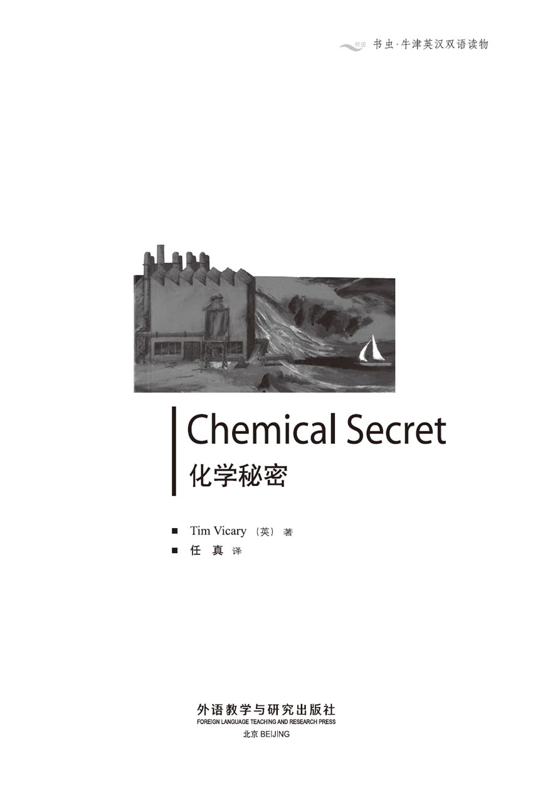
版权页
京权图字01-97-0329
Originally published by Oxford University Press, Great Clarendon Street, Oxford. © 1991
This edition is licensed for sale in the People's Republic of China only and not for export therefrom.
'Oxford' is a registered trademark of Oxford University Press.
只限中华人民共和国境内销售，不包括香港特别行政区、澳门特别行政区及台湾省。不得出口。
图书在版编目（CIP）数据
化学秘密＝Chemical Secret／（英）维卡里（Vicary, T.）著；任真译．—北京：外语教学与研究出版社，1998（2015.2 重印）
（书虫·牛津英汉双语读物）
ISBN 978-7-5600-1408-1
Ⅰ．化… Ⅱ．①维…②任… Ⅲ．英语—对照读物，文学—英、汉 Ⅳ．H319.4：I
中国版本图书馆CIP数据核字（98）第07713号
出版人： 蔡剑峰
责任编辑：周 晶
出版发行：外语教学与研究出版社
社 址：北京市西三环北路19号（100089）
网 址：http://www.fltrp.com
版 次：1998年7月第1版
书 号：ISBN 978-7-5600-1408-1
* * *
凡侵权、盗版书籍线索，请联系我社法律事务部
举报电话：（010）88817519
电子邮箱：banquan@fltrp.com
法律顾问：立方律师事务所 刘旭东律师
中咨律师事务所 殷 斌律师
简介
简 介
犯罪有两种形式，一种是有意识的，一种是无意识的。很少人刻意去犯罪，但大多数人对某些罪行视而不见。
然而，什么是犯罪？是应该以法律规定为依据还是以我们的内心感觉来判断？罪孽多种多样——贪婪、施暴、凶狠、仇恨。但是也有不太明显的罪恶——比如我们破坏这个世界：破坏天空、海洋、陆地。我们犯下的这些罪孽摧毁了未来和后代，但我们闭着双眼假装看不到这一切。
约翰·邓肯是一个生物学家。当他开始在化工厂工作时，他想他是在保护他的孩子们。他想为孩子们提供生活中最美好的东西，如一幢大房子、一艘船以及精彩的假期……然而他到底将给他们带来一个什么样的前途呢？
本书的作者蒂姆·维卡里从事英语教学数年，他现在在纽约生活和工作。
目录
1．A new start
1
A new start
'Mr Duncan? Come in please. Mr Wilson will see you now.'
'Thank you.' John Duncan stood up and walked nervously towards the door. He was a tall, thin man, about forty-five years old, in an old grey suit. It was his best suit, but it was ten years old now. He had grey hair and glasses. His face looked sad and tired.
Inside the room, a man stood up to welcome him. 'Mr Duncan? Pleased to meet you. My name's David Wilson. This is one of our chemists, Mary Carter.'
John Duncan shook hands with both of them, and sat down. It was a big office, with a thick carpet on the floor and beautiful pictures on the walls. David Wilson was a young man, in an expensive black suit. He had a big gold ring on one finger. He smiled at John.
'I asked Miss Carter to come because she's one of our best chemists. She discovered our wonderful new paint, in fact. When... I mean, if you come to work here, you will work with her.'
'Oh, I see.' John looked at Mary. She was older than Wilson — about thirty-five, perhaps — with short brown hair, and a pretty, friendly face. She was wearing a white coat with a lot of pens in the top pocket. She smiled at him kindly, but John felt miserable.
I'll never get this job, he thought. I'm too old! Employers want younger people these days.
David Wilson was looking at some papers. 'Now, Mr Duncan,' he said, 'I see that you are a very good biologist. You worked at a university... and then for two very famous companies. But... you stopped working as a biologist nine years ago. Why was that?'
'I've always had two interests in my life,' John said, 'biology and boats. My wife was a famous sailor... Rachel Horsley... Perhaps you remember her. She sailed around the world alone in a small boat.'
'Yes,' said David Wilson, 'I remember her.'
'So we started a business,' said John. 'We made small boats together, and sold them.'
'And did the business go well?' asked Wilson.
'Very well at first. Then we wanted to build bigger, better boats. We borrowed too much money. And then my wife...' John stopped speaking.
'Yes, the Sevens Race. I remember now,' said David Wilson.
Both men were silent for a moment. Wilson remembered the newspaper reports of the storm and the lives lost at sea. He looked at the man who sat sadly in front of him.
'So, after my wife died,' continued John, 'I closed the business. That was five years ago.'
'I see,' said David Wilson. 'It's a hard world, the world of business.' He looked at John's old grey suit. 'So now you want a job as a biologist. Well, this is a chemical company, Mr Duncan. We make paint. But we need a biologist to make sure that everything in this factory is safe. We want someone to tell the government that it's safe to work here, and that it's safe to have a paint factory near the town. That's important to us.'
'And if something's not safe, then of course we'll change it,' Mary Carter said. David Wilson looked at her, but he didn't say anything.
'Yes, I see,' John began nervously. 'Well, I think I could do that. I mean, when I worked for Harper Chemicals in London I...' He talked for two or three minutes about his work. David Wilson listened, but he didn't say anything. Then he smiled. It was a cold, hard smile, and it made John feel uncomfortable. He remembered his old suit and grey hair, and he wished he hadn't come.
'You really need this job, don't you, Mr Duncan?' David Wilson said. 'You need it a lot.'
'Yes, I do,' he said quietly. But he thought: I hate you, Wilson. You're enjoying this. You like making people feel small. I hate people like you.
Wilson's smile grew bigger. He stood up, and held out his hand. 'OK,' he said. 'When can you start?'
'What?' John was very surprised. 'What did you say?'
'I said, "When can you start?", Mr Duncan. We need you in our factory as soon as possible. Will Monday be OK?'
'You mean I've got the job?'
'Of course. Congratulations!' Wilson shook John's hand. 'My secretary will tell you about your pay. You'll have your own office, and a company car, of course. I'd like you to start work with Mary on Monday. Is that OK?'
'I... Yes, yes, of course. That's fine. Thank you, thank you very much.'
chemist n. a scientist who studies chemistry. 化学家。
paint n. a colored liquid used to change the color of other things. 油漆。
employer n. a person who gives you work to do. 雇主。
biologist n. a scientist who studies animals and plants. 生物学家。
chemical ① adj. of chemistry. 化学的。② n. something solid or liquid used in chemistry. 化学制品（常用复数）。
government n. the group of people who control a country. 政府。
congratulations n. a word said to someone who has been lucky or done well. 对某人幸运或成功时所说的祝贺之词。
崭新的开始
1 崭新的开始
“邓肯先生吗？请进。威尔逊先生现在要见你。”
“谢谢。”约翰·邓肯起身胆怯地往门口走。他瘦高个子，大约45岁，身着一套灰色旧西服。尽管这套西服已穿了10年，但仍是他最好的西服。他头发灰白，戴一副眼镜，面带忧郁和倦容。
屋内，一个男人站起来欢迎他。“邓肯先生吗？很高兴见到你。我叫大卫·威尔逊。这是玛丽·卡特，我们其中的一位化学家。”
约翰·邓肯与他俩握手后坐下。这是一间宽大的办公室，地上铺着厚地毯，墙上悬挂着美丽的画。大卫·威尔逊很年轻，身着一套昂贵的黑色西服，手指上戴着一枚硕大的金戒指。他对着约翰微笑。
“我让卡特小姐来是因为她是我们最好的化学家之一。事实上是她发现了我们最美妙的新油漆……我是说，如果你来这里工作，你将与她一起工作。”
“噢，我明白了。”约翰望着玛丽。她比威尔逊岁数大——也许大约35岁，留着棕色短发，长着一副漂亮友善的面孔。她身穿一件白外套，上方的口袋里插着许多钢笔。她友善地对约翰微笑，但约翰却感到痛苦。
他想：我永远也不会得到这份工作。我太老了！雇主们现在想聘更年轻的人。
大卫·威尔逊正在看一些文件。“我说，邓肯先生，我知道你是一个非常出色的生物学家。”他说道，“你曾在大学工作过，然后又在两家著名的公司干过。但是，你作为一个生物学家9年前停止了工作，这是为什么？”
“在我一生中我永远有两种兴趣，”约翰答道，“生物学和划船。我太太是一位有名的水手……雷切尔·霍斯利……也许你记得她。她曾独自乘小船环绕世界。”
“是的，我记得她。”大卫·威尔逊说道。
“所以我们开始做生意，”约翰说，“我们共同制造小船，然后出售。”
“生意进展得好吗？”威尔逊问道。
“一开始很好，然后我们就想造更大更好的船。我们借了太多钱。其后我的太太……”约翰停住了讲话。
“是的，赛文斯比赛，我现在想起来了。”大卫·威尔逊说道。
俩人都陷入片刻沉默。威尔逊记起报纸上报道的那场风暴和海上死亡事件。他望着忧伤地坐在他面前的这个人。
“所以，我太太去世后，”约翰继续说，“我停止了生意，那是5年前的事了。”
“我明白了，”大卫·威尔逊说，“生意场是很艰难的。”他望着约翰那灰色的旧西服，“这么说你想得到一份生物学家的工作。这是一家化学公司，邓肯先生。我们制造油漆。我们需要一名生物学家以保证工厂的一切都安全。我们需要有人告诉政府在这里工作是安全的，并且告诉他们城市附近有油漆厂也是安全的。这对我们很重要。”
“如果有什么不安全的，我们当然要改变它。”玛丽·卡特说。大卫·威尔逊看着她，但没有说任何话。
“是的，我知道。”约翰紧张地说，“我想我能够做。我的意思是，当我在伦敦为哈波化学公司工作时，我……”他谈了两三分钟关于他的工作的事。大卫·威尔逊听着，但没插话，然后他微笑着。那是一种冰冷、严酷的笑，它使约翰感到很不舒服。他想起他的旧西服和灰头发，他后悔来这里。
“你真的很需要这份工作，是吧，邓肯先生？”大卫·威尔逊说，“你非常迫切地需要它。”
“是的。”他轻声地回答。但是他想：我恨你，威尔逊。你喜欢看着我的这副样子。你喜欢使人感到渺小，我恨你这样的人。
威尔逊的笑容变得更灿烂。他站起身，伸出手说：“好吧，你什么时候能开始？”
“什么？”约翰很惊讶，“你说什么？”
“我说‘你什么时候能开始？’邓肯先生。我们需要你尽快到我们工厂，星期一行吗？”
“你是说我已得到这份工作了？”
“当然，祝贺你！”威尔逊握着约翰的手，“我的秘书将告诉你有关你的工资的事，你当然还有自己的办公室和公司配给你的车。我想让你星期一就开始与玛丽一起工作，那样行吗？”
“我……行，当然可以。这很好，谢谢你，非常感谢。”
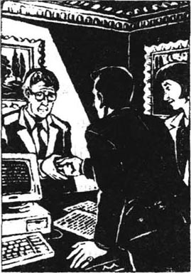
2．At home
2
At home
'Hi, Dad. Your supper's in the kitchen.'
John's sixteen-year-old daughter, Christine, was sitting at the table doing her homework. His son Andrew, who was thirteen, was watching television.
'Thanks, Christine,' John said. 'I'm sorry I'm late. Is everything OK?'
'Fine, thanks.' Christine gave him a quick smile, then continued with her work. John got his food from the kitchen. Fried fish and chips. The food was dry and didn't taste very good. But he didn't say anything about that. John was not a good cook himself and his children were no better. His wife had been a good cook, he remembered.
John tried to eat the terrible supper and looked around the small, miserable flat. The furniture was twenty years old, the wallpaper and carpets were cheap and dirty. The rooms were all small, and he could see no trees or gardens from the windows — just the lights from hundreds of other flats. And there were books, clothes, and newspapers on the floor.
Once, when his wife had been alive, he had had a fine house. A beautiful big house in the country, with a large garden. They had had lots of new furniture, two cars, expensive holidays — everything they needed. He had had a good job; they hadn't needed to think about money. And then he had started the boat-building company, and his luck had ended.
When Rachel had died, John had been terribly unhappy — much too unhappy to think about business. A few months later his company had closed, and he had lost all his money. John had had to sell his beautiful house in the country, and move to this miserable flat.
And for the last two years, he hadn't had a job at all. He was a poor man, and an unlucky one, too. He had tried for lots of jobs, and got none of them. There were too many bright young biologists. But now that was all going to change. He looked at his daughter and smiled.
'Did you have a good day at school, Christine?' he asked her.
'Oh, all right, I suppose,' she said. She didn't look very happy. 'I've got a letter for you.'
She pushed the letter across the table, and he opened it. It was from her school. One of the teachers was taking the children on a skiing holiday to the mountains in Switzerland. It cost ￡400 for ten days. Parents who wanted their children to go had to send the money to the school before February 25th.
John's smile grew bigger. 'Do you want to go on this holiday, Christine?' he asked.
She looked at him strangely. 'Of course I do, Dad,' she said. 'But I can't, can I? We haven't got ￡400.'
'No, I suppose not.' He looked at her carefully through his thick glasses. She was a clever, strong girl — good at her schoolwork, good at sports. But she had never been skiing; John hadn't had enough money.
'Are your friends going?' he asked her.
'Some of them, yes. Miranda, Jane, Nigel — the rich ones, you know. But they often go skiing; it's easy for them. I know I can't go, Dad. Throw the letter away.'
John looked at her, and felt his heart beating quickly. 'No, don't do that, Christine,' he said. 'Perhaps you can go, if you want to. Why not?'
Christine laughed. 'What's happened, Dad? Have you robbed a bank or something?'
John stood up. He went into the kitchen and got himself a drink. 'No,' he said, when he came back. 'But something interesting happened today. Put your homework away, Christine — and turn that TV off, Andrew. I've got something to tell you.'
'Oh, not now, Dad!' said Andrew. 'This is an exciting story.'
John smiled. 'I've got an exciting story, too, Andrew. Come and listen.'
John Duncan's children lived in an old, untidy flat, they had no money, and they often ate awful food. But they could still talk to their father. So Andrew turned off the TV, and sat down in a big armchair beside his father and Christine.
The story didn't sound very exciting at first. 'I went to a factory today,' John said. 'That paint factory by the river. No, wait, Andrew. Paint factories can be very exciting. They gave me a job there. I'm going to have my own office, a big car, lots of money — in fact, we're going to be rich...!'
continue v. to go on doing. 继续。
chip n. a long thin piece of potato cooked in deep fat. 薯条。
bright adj. clever. 聪明的。
skiing n. a sport when people move over snow on skis. 滑雪运动。
throw v. to move your arm quickly to send something through the air. 扔。
rob v. to take sth. by force. 抢劫。
untidy adj. not clean. 不整洁。
lots of 许多，大量。
在家中
2 在家中
“喂，爸爸。你的晚餐在厨房里。”
约翰16岁的女儿克里斯汀正坐在桌旁做功课。他13岁的儿子安德鲁正在看电视。
“谢谢你，克里斯汀，”约翰说，“很抱歉，我回来晚了，一切都好吗？”
“好，谢谢。”克里斯汀朝他匆匆一笑，又继续做作业。约翰从厨房端出食物——炸鱼和薯条。食物很干，不怎么好吃，但是他什么也没说。约翰自己不善于烹饪，他的孩子们更不行。他回想起他的太太曾是很好的厨师。
约翰努力吃下这难咽的晚餐，环视着这又小又简陋的公寓。家具是20年前买的，壁纸和地毯既廉价又脏。所有的房间都很小，从窗口往外看去见不到树林或花园，只有从数百家别的公寓里透出的灯光。地上到处扔着书、衣服和报纸。
以前他太太活着的时候，他有一座很好的房子，一座坐落在乡村，有很大花园的漂亮大房子。他们曾有很多崭新的家具、两部汽车、奢侈的假期——应有尽有。他有一份满意的工作，他们不用考虑钱。然后他创办了造船公司，接着他的好运气结束了。
雷切尔死后，约翰一直很忧郁，太忧郁以至于无心考虑生意。几个月以后他的公司关闭了，他失去了所有的钱。约翰不得不卖掉乡村的房子，搬进这简陋的公寓。
在过去的两年中，他根本没有工作。他是一个贫穷的人，也是一个倒霉的人，他曾找过许多工作，但没有得到一份工作。智慧、年轻的生物学家太多了。但是现在这一切都将发生变化。他微笑着望着他女儿。
“今天你在学校过得愉快吗，克里斯汀？”他问她。
“噢，我想还行，”她说，她看上去并不很高兴，“我有一封给你的信。”
她把信从桌上推过来，他打开信。信来自她的学校。有个老师要带学生们到瑞士的山上去滑雪度假。10天的费用是400英镑。想让自己的孩子去的家长得在2月25日前把钱交到学校。
约翰的笑容更加灿烂了。“克里斯汀，你想参加这次度假吗？”他问。
她奇怪地望着他。“我当然想，爸爸。”她说，“但是我不能去，对吧？我们没有400英镑。”
“是的，我估计不能。”他透过厚厚的眼镜小心地看着她。她是一个聪明坚强的女孩，她功课、体育都很好，但是她从来没有滑过雪，因为约翰没有足够的钱。
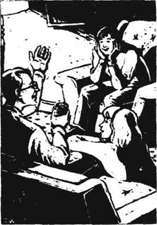
“你的朋友们去吗？”他问她。
“有些人去，那些较富的同学，如米兰达、珍妮、奈杰尔。他们经常去滑雪，这对他们来说很容易。我知道我不能去，爸爸。把信扔掉吧。”
约翰望着她，感到心跳加快。“不，别这样做，克里斯汀，”他说，“也许你能够去，如果你想去。为什么不能呢？”
克里斯汀笑了，“发生什么事了，爸爸？难道你抢了银行或什么？”
约翰站起身，走进厨房为自己倒了一杯饮料。“没有，”他回来时说，“但是，今天发生了件有趣的事。克里斯汀，先把你的作业放一下，安德鲁，把那电视关上，我有事要告诉你们。”
“哦，等一下关，爸爸！”安德鲁说，“这是一个精彩的故事。”
约翰笑着说：“我也有一个精彩的故事，安德鲁，过来听听。”
约翰·邓肯的孩子们住在一间旧式杂乱的公寓里，他们没有钱，经常吃糟糕的食品。但是他们仍愿跟他们的父亲交谈。所以安德鲁关掉电视，坐在父亲和克里斯汀旁边的一张大沙发里。
故事一开始听起来并不很精彩。约翰说：“今天我去了一个工厂。河边的那家油漆厂。不，等一下，安德鲁。油漆厂可以是令人振奋的。他们给了我一份工作。我将有自己的办公室、一辆大轿车、很多钱。真的，我们要有钱了。”
3．Rich man
3
Rich man
John Duncan started work on Monday, and Mary Carter showed him round the factory. The most important thing that the company produced was a new paint for cars. It was a very strong, hard paint, which nothing could damage. Mary and her chemists had developed it, and they had tested it all over the world. Neither acid nor salt water could damage it, and cars came back from both the Arctic and the Sahara looking like new.
The company was beginning to make a lot of money from this paint, and it had brought four hundred new jobs to the town.
One day, when he was working with the paint, John spilt some of the waste products on his leg. He cleaned it off quickly, but it left a red, painful place on his skin, which would not go away. It kept him awake at night. He told his doctor what he had spilt on it, and the doctor looked at him strangely.
'So these chemicals had something to do with the new paint, did they?' the doctor asked carefully.
'Yes, I told you. It was a bottle of the waste products. I was looking at them in my office.'
'I see.' The doctor looked out of the window thoughtfully. His fingers moved quietly on his desk. 'And your company is producing a lot of these waste products now, I suppose.'
'Yes, of course.' John was in a hurry. He had to meet someone important in ten minutes. 'Look, can you give me something to put on it, or not?'
'Oh yes.' The doctor began to write something on a piece of paper. 'Put this on night and morning, and the pain will go in a day or two. But I'm afraid the skin there will stay red for a year or two. They're nasty chemicals, Mr Duncan, you know.'
'Yes, I know.' John smiled at him. 'But don't worry, Doctor, we're very careful with them in the factory. No one can go near them without special safe clothing. you can come and see if you like.'
'I'm very pleased to hear it,' said the doctor. He gave the piece of paper to John.
'Thank you,' said John. He went towards the door.
'Mr Duncan?'
'Yes?' John looked back, surprised.
'Where do these waste products go, when the factory has finished with them? Into the river?'
'Well, yes, of course,' said John. 'But it's all right, you know,' he added quickly. 'It's very carefully checked, all the time. It's a big river, and we only produce a few hundred litres of the waste products a day. And we're only two kilometres from the sea, after all.'
'Good,' said the doctor. 'I wouldn't want anyone to drink those waste products, that's all.'
'They won't, doctor,' said John. 'All the drinking water comes out of the river five kilometres upstream, you know that. Who's going to drink salt water from the river mouth, for heaven's sake? Chemists from London have checked it, too, you know, and our company lawyers know all about it. So it's not dangerous and we're not doing anything wrong. Don't worry about it.'
He went out of the door, and after half an hour he had forgotten the conversation.
He was a very busy man now. All day he had to test different types of paints, and make sure they were safe. He was also busy buying a big, comfortable house for his family, with a large field beside it, where Christine could keep a horse. The house was half a kilometre from the sea, and its gardens went down to the river. There was an empty boathouse there.
'Can we have a boat, Dad?' Andrew asked. 'I mean, not now, of course, but one day — when you've finished paying for the house, perhaps?'
John laughed. His children had been poor for so long. But now he could buy them anything they wanted.
'You can have a boat now, if you want, my son,' he said happily. 'If I can afford a big house like this, I can certainly afford a small boat. We'll go fishing every week, shall we? And I'll teach you both to sail in the evenings. I've always wanted to do that, you know.'
He could not believe how lucky he was. He had a good job at last, a fine home, and his children had everything they wanted. He only wished his wife, Rachel, was alive to enjoy it with him. There was only one thing that he could not give his children now. He could not give them back their mother.
produce v. to make something. 制造，生产。
develop v. to change something and make it bigger or better. （逐步）发展，产生。
test v. to look at something carefully to find out how good it is. 检验，化验，测验。
acid n. a chemical liquid that burns. 酸，酸性物质。
spill v. to make a liquid run or fall out of a container by mistake. 使溅出，洒。
waste products something that is made (but which is useless and not needed) during the making of something else. （在制造过程中生产出的没用的）废料。
nasty adj. bad, not nice. 坏的，不好的。
litre n. unit of capacity. 公升（容量单位）。
upstream adv. up the river away from the sea (the opposite of downstream). 上游。
for heaven's sake words people say to show they are angry or surprised. 看在上帝的份上；天啊。
lawyer n. someone whose job is helping people with the law. 律师。
conversation n. talk. 谈话。
afford v. to have enough money for something. 有足够的钱支付。
alive adj. living. 活着的。
富人
3 富人
约翰·邓肯星期一开始工作，玛丽·卡特带他参观了工厂。公司最重要的产品是一种新的汽车油漆，它是一种附着力很强的坚固油漆，任何东西都不易损坏它。玛丽和她的化学家们研制出它，并在全世界测试。它抗含酸或含盐的水，上过这种油漆的汽车从北极和撒哈拉沙漠回来如同新车一样。
公司开始从这种油漆上赚很多钱，同时也给小镇带来400个新的就业机会。
一天，当约翰正在使用油漆时，一些油漆废料溅在他腿上。他很快把它擦拭掉，但漆料在他皮肤上留下了一块红色、发疼的地方，总不消退。这使他晚上睡不了觉。他告诉他的医生他洒在腿上的是什么，医生很奇怪地看着他。
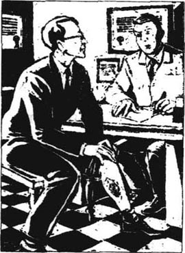
医生小心地问：“这么说，这些化学制品与新研制的油漆有关，对吧？”
“是的，我说过，那是一瓶产品废料。当时我在办公室正观察它们。”
“我明白了。”医生望着窗外沉思着，他的手指轻轻地在桌上移动着，“我想，你们公司现在正在生产大量的这种废料。”
“是的，当然。”约翰有急事，他要在10分钟后见一个重要人物，“我说，你能否给我一些涂抹的药？”
“噢，可以。”医生开始在一张纸上写着什么，“早晚上药，疼痛一两天就会消失。但是那块皮肤上的红块恐怕要持续一两年。它们是讨厌的化学制品，你要知道，邓肯先生。”
“是的，我知道。”约翰对他笑笑，“别担心，医生，我们在工厂里会非常小心地处理它们。不穿特制的安全服，任何人也不能靠近它们。如果你愿意，可以来看看。”
医生说：“你这么说我非常高兴。”他把纸递给约翰。
“谢谢。”约翰说道。他向门口走去。
“邓肯先生？”
“啊？”约翰吃惊地回头望去。
“工厂用完这些废料，往哪里倾倒？是往河里倒吗？”
“那当然，”约翰说，“但没关系，你知道，”他很快接着说，“废料随时都经过认真检验。河大得很，而我们每天只生产出几百公升废料。再说，我们毕竟离大海只有两公里。”
“这就好，我只不过不想让任何人喝带有废料的水。”医生说。
“他们不会的，医生，”约翰说，“所有饮用水来自5公里以外的上游，这你是知道的。天啊，谁又会去喝河口处的咸水？伦敦的化学家们也检测过水质，你知道，我们公司的律师知道这一切。所以这并不危险，我们也没做什么错事，你不用为此担心。”
他走出门，半小时后他忘却了这段谈话。
他现在是一个大忙人，整天都要测试不同类型的油漆，以确保它们的安全性。他还正忙着为他的家庭购置一所宽敞舒适的房子，在它旁边有一片宽阔的田野，在那里克里斯汀可以养一匹马。房子距离大海半公里远，它的花园延伸至小河。那里有一间空船屋。
“爸爸，我们能有一艘小船吗？”安德鲁问，“我的意思当然不是指现在，而是将来某一天——也许是你支付完购买房子的钱后？”
约翰笑了。他的孩子们受了这么长时间的穷。但是现在孩子们要什么他都可以满足他们了。
“如果你想要，现在就可以买一艘，儿子，”他高兴地说，“我既然能买得起这么大一所房子，当然也买得起一艘小船。我们每星期都会去钓鱼，怎么样？晚上我教你们俩驾船。你们知道我一直都想这样做。”
他简直不敢相信他有多么幸运。他终于有了一份好工作，一个像样的家，他的孩子想要什么就有什么。他真希望他的妻子雷切尔还活着与他共享这一切。现在只有一样他给不了他的孩子们。他不能把他们的母亲还给他们。
4．The seals
4
The seals
A few months later, John invited Mary to a meal in the new house. It was a difficult evening. He had never invited anyone to their old flat, and the children's friends never came for meals. The new house was very untidy, and John was nervous about the food. He and Christine cooked a chicken because they thought it was easy. But the chicken was tasteless and the rice was too soft.
Mary smiled, and pretended not to notice. But the evening went badly. Christine was angry with her because she tidied up the kitchen, and Andrew was angry with her because she didn't want to watch TV. Both the children went to bed early, and thought about their mother.
But Mary came again, on a Sunday, and John took them all out in their new boat. That was much better. Mary didn't know how to sail, so the children had to tell her what to do. She did what she was told, and seemed to be happy. John sat at the back of the boat, and watched his children quietly. He felt proud of them, and he thought they were proud of him too. The first time Mary and the children laughed together, John felt a big smile come onto his face.
It was a beautiful, sunny day in the middle of May. There was a good wind, and the sailing was fun. The boat sailed fast, over small, white-topped waves. The sky was blue and clear. They sailed down to the mouth of the river, where there were lots of small islands and sandbanks.
'Look, Dad, quick! Over there! What are they?'
Andrew pointed excitedly to one of the long, low sandbanks.
'Seals,' said John. 'Haven't you seen them before?'
'No,' said Andrew. 'Only in films. Not in real life.' His face was shining, excited, happy. 'Do they really live here?'
'Yes. It's a group of seal families. The mothers come here every year to have their babies.'
They sailed closer to the sandbank, until they were only about twenty metres away from the seals. Wet, shiny seal mothers lifted their heads and looked at them with their blue eyes. The baby seals were drinking milk from their mothers, climbing over them, and playing in the shallow water. Then a big father seal lifted his head and stared angrily at them.
'I think they're beautiful,' said Mary. 'I never knew they lived here, so close to the town. It makes me feel really happy, just to see them.'
'Yes, it does, doesn't it,' said Christine. 'I think nothing can be really wrong with the world, if they can live here, all by themselves, with no one looking after them.'
'Yes,' said Mary. 'And they're really beautiful, too. Look! Did you see that little one, playing on his mother's back? I wish I could do that!'
John smiled, as he watched Mary and his children laughing and talking together. He thought the world was a good place, too.
invite v. to ask sb. to come. 邀请。
tasteless adj. no flavor. 无味的。
tidy up to put in order. 整理。
thought v. past tense of think. 动词think（想、认为）的过去式。
proud adj. feeling pleased about something you have or did. 自豪的，得意的。
wave n. a movement of water in the sea or a river. 波浪。
sandbank n. a large area of sand in a river or the sea. 沙滩，沙洲。
point v. to show with your finger or hand where something is. 指出，指向。
seal n. an animal that lives both in the sea and on land. 海豹。
stare v. to look at something or someone very hard for a long line. 盯着。
look after to watch closely. 关心，照料。
海豹
4 海豹
几个月以后，约翰邀请玛丽到他的新居共进晚餐。这是一个不顺利的夜晚。他从没邀请过任何人到他们的旧寓所，孩子们的朋友也从未来聚过餐。新房子里非常凌乱，约翰对食物感到很担心。他和克里斯汀认为做鸡容易，于是就烧了鸡。但是鸡做得没有味道，米饭也太软了。
玛丽微笑着，假装没注意到。但是晚上过得很糟糕。克里斯汀生她的气，因为玛丽收拾了厨房，安德鲁生她的气是因为她不愿看电视。两个孩子很早就上床睡觉，并且思念着他们的母亲。
然而玛丽在一个星期天又来了，约翰带着所有的人乘着他们的新船出游。这次好多了。玛丽不知如何驾船，所以孩子们不得不告诉她如何去做。她按照指令操作，显得很快活。约翰坐在船尾，静静地注视着孩子们。他为他们感到骄傲，他想他们也为他感到骄傲。玛丽和孩子们第一次在一起欢笑，约翰觉得他自己脸上也绽开了笑容。
那是5月中旬阳光明媚的一天，风速很好，乘船游览很有趣。小船在泛泛微波上行驶得很快。天空蔚蓝无云。他们行驶到河口，那里有很多小岛和沙滩。
“快看，爸爸！在那儿！它们是什么？”安德鲁兴奋地指着其中一个长长的低沙滩。
“海豹，”约翰答道，“你以前从没见过海豹吗？”
“没有，”安德鲁说，“只在电影上见过。我没有在现实生活中见过。”他的脸闪着光、兴奋和喜悦，“它们真的住在这里吗？”
“是的。那是一群海豹家族。雌海豹每年到这里来产下它们的幼崽。”
他们驶近沙滩，一直到离海豹只有约20米远。湿润光滑的海豹妈妈们抬起它们的头，用它们的蓝眼睛注视着他们。幼海豹正在吸吮它们妈妈的奶，爬过它们妈妈的背，在浅水中戏耍。这时一只大雄性海豹抬起它的头愤怒地盯着他们。

“我觉得它们很漂亮，”玛丽说，“我从来不知道它们住在这里，离镇这么近，仅仅是望着它们就足以使我感到非常快活了。”
“真是这样，难道不是吗？”克里斯汀说道，“我想这个世界真美好，它们能够在此生存，完全靠自己，没有任何人照顾它们。”
“是的，”玛丽说，“并且它们也确实很漂亮。看那儿！你看到那个在妈妈背上玩耍的小不点了吗？我希望我也能那样做！”
约翰一边看着玛丽和他的孩子们在一起欢声笑语，一边微笑着。他也认为这个世界是一个好地方。
5．The new experiment
5
The new experiment
A few days later, John asked Mary to look at another experiment. He took her into a long, quiet room at the back of the factory. The room was full of the noises of small animals.
'I've been testing the waste products,' he said. 'Here, look at this.' He gave her a sheet of paper. 'Some of these rats have had the waste products in their food and drinking water. There's no real problem yet. One or two have become ill, but not many. There's nothing very serious.'
Mary read the results carefully. She didn't like this kind of experiment, but she knew it was necessary. And John was right; no rats had died, and not very many were ill.
'So what do you want to show me?' she asked.
'This,' he said. He opened a box by the window. 'These ten rats have had the waste products in their drinking water for two weeks now. I gave them a lot — five parts per million. They're going to have babies today. If the babies are OK, We've got nothing to worry about.'
'Oh, John,' she said. 'What an awful thing to do!'
'I know, I know,' he said. But he wasn't listening. 'Look,' he said excitedly. 'Some of them have been born already!'
He lifted some of the baby rats out of the box and looked at them through a magnifying glass.
'Oh dear,' he said at last, sadly. 'Perhaps there is a problem. Look!'
Mary looked through the magnifying glass. She began to feel ill. There was a long silence.
'There certainly is a problem!' Mary's voice sounded loud and high in the quiet room. She stared at the small animals under the magnifying glass. 'Baby rats with no eyes, no ears, six legs! Oh John! John! What have you done?'
He looked at her strangely. 'It's awful, isn't it? But I had to know. And remember, Mary — their mothers have had five parts per million of these chemicals in their drinking water for two weeks. That's a lot — much, much more than we're putting in the river.'
Mary looked away from the rats. She remembered the beautiful afternoon that they had spent with John's children, sailing on the clear blue water. 'John, these waste products are dangerous!' she said. 'We've got to stop putting them in the river!'
'Of course, of course.' John put his hand on her arm, to comfort her. But it was the same hand — the hand that had held the rats. 'Of course we'll stop it, if we need to, Mary. The company can build machines to clean the waste products. I'll start my report for David Wilson next week.'
'But...' She turned round to face him. His hand fell from her arm. 'Don't you think we should stop making the paint now, John? Perhaps it'll take years to build those machines, and we're putting the chemicals into the river right now!'
A shadow crossed his face. His eyes looked at hers, then away, out of the window.
'I... don't think we need to do that now, Mary. We're putting very little into the river at the moment. And the company will build those machines, won't they?'
She remembered her long years of work, the hundreds of unsuccessful experiments. She touched his hand, and smiled. 'I hope so, John,' she said. 'I really hope so.'
She turned, and went quickly out of the room.
experiment n. a test on something to find out what happens and to learn something new. 实验。
rat n. a small grey or brown animal with a long tail. 老鼠。
result n. what happens because of something (e.g. an experiment). 结果（如实验结果）。
five parts per million how much something is diluted by... 稀释的比例：每百万分之五。
magnifying glass n. a special glass that makes small things look bigger. 放大镜。
comfort v. to try to make someone feel happier. 安慰。
shadow n. dark shape. 阴影。
新实验
5 新实验
几天以后，约翰让玛丽去观看另一个实验。他将她带进工厂后面一个僻静的长屋子里。屋子里充满小动物的叫声。
“我一直在测试这些废料，”他说，“看这东西。”他递给她一张纸，“这其中一些老鼠已经食用了搀有废料的食物和饮用水。还没有出现真正的问题。有一两只已经病了，但不多。情况不是很严重。”
玛丽仔细地读着实验结果。她不喜欢这种实验，但是她知道这有必要。而且约翰是对的，还没有老鼠死亡，生病的也不多。
“那么你想证明什么？”她问。
“这一点，”他说着，打开了靠近窗户的一个箱子，“这10只老鼠喝了搀有废料的水到现在已经有两个星期了。我给了它们许多——一百万分之五。它们今天要下小崽儿了。如果它们的小崽儿没问题，我们就不用担心了。”
“哦，约翰，”她说，“做这样的事真可怕！”
“我知道，我知道，”他说，但他并没有在听，“看呀，”他兴奋地说，“有些已经生下了。”
他从箱子里提出几只鼠崽儿，用放大镜观看它们。
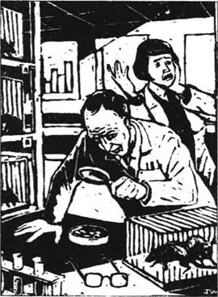
“哦，我的天啊，”他最后懊丧地说，“也许有问题。你瞧！”
玛丽透过放大镜观看。她开始感到不好受，沉默了很长一段时间。
“绝对有问题。”玛丽的声音在寂静的屋子里显得又响又亮。她盯着放大镜下面的小动物。鼠崽儿没有眼睛，没有耳朵，6条腿！“哎！约翰呀约翰！你都干了些什么？”
他奇怪地望着她，“很糟糕，是吧？但我必须知道。要记住，玛丽——它们的母亲是喝了两个星期的掺有百万分之五的这些化学物质的水。那是很大量的，远远超过我们放入河中的。”
玛丽的视线离开老鼠。她想起了和约翰的孩子们共度的美好下午，航行在清澈碧蓝的河水里。“约翰，这些废料有危险！”她说，“我们必须停止向河中倾倒！”
“当然，当然。”约翰将手放在她的臂上，安慰着她，然而就是这同一只手曾拿过老鼠，“如果需要，我们当然会停止这样做，玛丽。公司会制造出机器去清理废料。下星期我给大卫·威尔逊起草一个报告。”
“但是……”她转过身面对着他，他的手从她的臂上落下来，“约翰，你不认为我们应该现在就停止制造这种油漆吗？也许要花几年时间去制造那些机器，而我们现在正在往河里倾倒化学物品！”
一个阴影从他脸上掠过。他双眼注视着她的双眼，然后移开，向窗外望去。
“我……不认为我们现在就需要这样做，玛丽。目前我们只是放入河里一点点。再说公司会制造出那些机器的，对吗？”
她回忆起多年的工作，上百次失败的实验。她触摸着他的手笑了。她说：“我希望如此。我真的希望如此。”
她转身飞快地走出屋子。
6．The report
6
The report
John's report took longer than he had thought. It was nearly six weeks later when he went to discuss the results with David Wilson.
Mr Wilson wasn't a scientist. He was a businessman. He knew how to run a business, how to make money.
'Thanks for coming, John.' David Wilson came out from behind his desk and shook hands with John. They sat in two big, comfortable armchairs by the window.
David Wilson's office was large, with a thick carpet and beautiful pictures on the walls. From the window, John could see the river, and the woods and fields on the other side. He felt comfortable, happy, safe.
'I've read your report,' Wilson began. Then he stopped, and lit a cigarette. 'Not very good, is it?'
'What?' John stared at him in surprise.
Wilson smiled, and moved his hand through the clouds of smoke. 'No, no, don't worry — I don't mean the report is bad, of course not. You've worked very hard, and done your job well. What I mean is, I don't like the ideas at the end of the report.'
'What's wrong with them?'
'They're too expensive.' The two men stared at each other for a moment, and John felt cold and sick in his stomach. Wilson smiled, but it wasn't the kind of smile that John liked.
'Look, John,' he said. 'Your report says that we should build some new machines to clean up the waste products before they go into the river, right? And those machines will cost two million pounds! Where do you think we can find all that? Money doesn't grow on trees, you know!'
'No, of course not.' John's mouth was dry. He took a drink of water, and felt his hand shaking. 'But we're selling a lot of the new paint. We're making millions of pounds every month from that, aren't we?'
'We're doing very well, yes,' said Wilson. 'But if we spend two million pounds to build these new machines, the paint will have to cost more, and we won't sell so much.'
'But — we've got to do it,' said John. 'These waste products are much more dangerous than I'd thought. Didn't you read that in my report? When I put the chemicals in rats' drinking water, some of the baby rats were born without eyes and ears. One didn't have any legs, and one had six.' He shivered. 'And some were born without legs when they drank only two parts per million. We can't put those chemicals in the river.'
'Of course I read that, John. I read your report very carefully indeed. And your report also says that on most days we put less than two parts per million into the river. No, wait, listen to me for a minute! We both know that no drinking water comes out of this part of the river, don't we? And in two kilometres the river goes out into the sea. So why is it dangerous? Nobody is ever going to drink it, John! We don't need to build these new machines!'
John thought of his children, sailing on the river in their boat. He thought of the seals, and people fishing, and little children playing on the beach and swimming. 'We've got to build them!' he said.
David Wilson looked at him carefully. His voice, when he spoke, was very quiet and hard. 'Listen to me, John. You're a very good scientist, and we're lucky to have you in this company. But you're not a businessman, and I am. Look at this.' He picked up a sheet of paper, and held it across the table for John to see. It showed how much money the company had. 'We borrowed ten million pounds last year, and we employed four hundred more people. Think how much that means to a small town like this!'
'I know,' said John. 'But...'
'Just a minute. Listen to me. If we build these cleaning machines of yours, people will lose their jobs — a lot of people! This company can't afford to borrow any more money, John. We just can't do it!'
John stood up. 'And what happens if people get ill because of this? Have you thought of that? What will the newspapers say then?'
'No one will get ill, because no one drinks that water, John. The newspapers will never know about it.'
'They will if I tell them.'
There was a long silence. Then David Wilson stood up. He walked past John Duncan, without looking at him, and sat down behind his desk. When he looked up, his eyes were cold and grey, like stones from the beach.
'If you do that, John, I shall say you're a liar. You'll lose your job. You'll have to sell your house, and go back to living in a nasty little flat. You'll never get another job, and you'll never have a house or any money again. You'll just be an old man, walking the streets without friends or money. Is that what you want?'
John didn't answer. He stood for a long time, and stared at David Wilson, and didn't say a word. After nearly two minutes, Wilson smiled — a thin quiet smile.
'But if you stay with us, you will be paid twice as much next year. And no one will ever be hurt, because no one will ever drink that water.'
He got up from his desk, came round to the front, and held out his hand. John stood still for a long moment. Then he shook hands.
'Think about it, John,' said David Wilson.
John Duncan turned, and walked slowly towards the door.
shake hands with 与……握手。
woods n. an area with a lot of trees. 树林。
shiver v. to shake because you are cold or frightened. 颤抖，哆嗦。
because of 因为……，由于……。
liar n. a person who says things that are not true. 说谎者。
报告
6 报告
约翰的报告花的时间比他想像的要长。将近六个星期以后他才去找大卫·威尔逊讨论实验的结果。
威尔逊先生不是一个科学家，他是一个商人，他懂得怎样管理生意，怎样赚钱。
“谢谢你的到来，约翰。”大卫·威尔逊从他的桌子后面走出来与约翰握手。他们坐在靠窗户的两张非常舒适的大沙发里。
大卫·威尔逊的办公室很大，铺着厚厚的地毯，墙上有许多漂亮的画。从窗户望去，约翰可以看见河以及河对面的树林和田野。他感到舒适、愉快、安全。
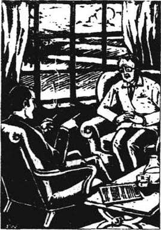
“我已经读了你的报告，”威尔逊开口道，然后他止住，点燃一支雪茄，“不太好，是吧？”
“什么？”约翰吃惊地盯着他。
威尔逊笑着，在烟雾中挥动着他的手，“不，不，别担心——我不是说报告不好，当然不是。你工作很努力，而且工作表现很好。我的意思是我不喜欢报告结尾的那些意见。”
“它们有什么不妥？”
“它们太费钱了。”两个人相互凝视了一会儿，约翰感到胃部又凉又难受。威尔逊笑了笑，但那不是约翰喜欢的那种笑。
“你瞧，约翰，”他说，“你的报告说我们应该制造一些新机器，在将废料倒到河里以前将它们净化，对吧？而那些机器将花费两百万英镑！你想我们能从哪儿搞到所有这些钱？你知道钱不会从天上掉下来！”
“对，当然不会。”约翰的嘴开始发干。他喝了一口水，他感觉他的手在颤抖，“但是我们正在卖大量的新油漆，我们每月都从中挣上几百万英镑，不是吗？”
“是的，我们干得非常好，”威尔逊说，“但是如果我们花两百万英镑去造这些新机器，油漆价格就会贵些，我们就卖不了那么多。”
“但是——我们必须这样做，”约翰说，“这些废料比我以前想象的还要危险。你难道没在我的报告里读到吗？我在老鼠的饮用水里放入化学品，生出来的一些幼鼠没有眼睛和耳朵。有一只没有腿，还有一只有6条腿。”他战栗着，“有些只喝了百万分之二，生出来就没有腿。我们不能将那些化学品放入河里。”
“我当然读到，约翰。我的确很认真地读了你的报告。你的报告也说到大部分日子里我们放入河里的是少于百万分之二。不，请等一下，听我说一会儿！我们俩都知道饮用水不是来自河的这一方，不是吗？再流两公里，河水就进入大海。所以怎么会有危险呢？从没有人会去喝它，约翰！我们不需要制造新机器！”
约翰想到他的孩子们乘他们的船行驶在这条河上。他想到海豹，想到人们钓鱼，想到小孩们在河滩上玩耍，在河里游泳。他说：“我们不得不造机器！”
大卫·威尔逊仔细地看着他。他说话时的声音非常平静而且坚定，“听我说，约翰。你是一个很出色的科学家，我们有幸雇你在这个公司干活儿。但是你不是一个商人，而我是。你瞧。”他拿起一张纸，从桌子对面递过来给约翰看，它显示出公司有多少钱，“去年我们借了1000万英镑，并且又雇用了400人。想想对这样一个小镇来说这意味着多少？”
“我知道，”约翰说，“但是……”
“等等。听我说。如果我们建造你的这些净化机器，人们将会失去他们的工作——很多人！这个公司借不起更多的钱，约翰。我们真是不能那样做！”
约翰站了起来，“那么如果人们因此而得病怎么办？你想过没有？到那时报纸会怎么说？”
“没人会得病，因为没人喝那种水，约翰。报纸永远不会知道此事。”
“如果我告诉他们，他们就会知道。”
长时间的沉默后，大卫·威尔逊站了起来，他从约翰·邓肯身旁走过，没看他，在他的桌子后面坐下。当他抬头时，他的目光冷酷而暗淡，如同沙滩上的石头。
“如果你那样做，约翰，我会说你是一个骗子。你将失去你的工作。你将不得不卖掉你的房子，回去住那龌龊的小公寓。你将永远找不到另一份工作，你再也不会有房子和任何钱了。你将只是一个走在街上没有朋友没有钱的老头，这难道是你所想要的吗？”
约翰没有回答。他站了许久，盯着大卫·威尔逊，没有说任何话。大约两分钟过后，威尔逊露出微笑——非常勉强的轻轻一笑。
“但是如果你跟我们站在一边，明年你的收入将增加一倍，并且没人会受到伤害，因为没人会去喝那水。”
他从桌子旁站起来，绕到前面，伸出他的手。约翰一动不动地站了很长时间，然后他与威尔逊握了手。
“考虑考虑，约翰。”大卫·威尔逊说。
约翰·邓肯转身慢慢地向门口走去。
7．Christine and Simon
7
Christine and Simon
Mary talked to Mr Wilson too, but it was no good. She came out looking tired and very sad.
For many months she argued with David Wilson about the danger of the waste products, but he would not listen to her. And so, eighteen months after John's report, Mary decided to move to another company. she was pleased, because it was a more important job, but that wasn't the reason she was going. She knew that the cleaning machines would never be built.
John was sad to see her go. He had enjoyed working with her, and she had come to his house several times over the last year and a half. His children liked her now. They had never been so friendly with any woman, since their mother had died.
On her last day, Mary and John had lunch in the factory restaurant together.
'You don't have to go, you know, Mary,' John said. 'This company is very successful, and it's growing all the time. Your new paint has meant four hundred new jobs — all because of your discovery! This isn't a poor town any more — it's becoming successful, rich! People will want to move here from other places.'
He talked about the new sports centre at Andrew's school, which was built with money from the paint company. There were two big, new shops in the town as well, and a new theatre, and a lot of new houses. 'And it's all because of you,' he said. 'It's wonderful, Mary, don't you think?' He smiled at her across the table, and took her hand in his.
She looked at him quietly. He had changed a lot since he had first started working at the factory. For the first six months after he had got the job, he had been really happy and lively. She had always known where he was in the factory, because he was always laughing, or singing to himself.
But for the last eighteen months he had been much quieter. He was always busy, but he didn't sing or laugh, and he didn't often look Mary in the eyes. And when he was alone, he looked tired and sad.
She took her hand away from his, gently. 'You know why I'm going, John,' she said. 'I know what's going into the river, and I don't like to think about it. You should leave, too, and get a job in another company.'
'I'm too old.' John stared at her angrily. 'It isn't easy for me to get a new job. And Mary, the company has been making the paint for more than two years now, and no one's been hurt, have they?'
Mary didn't answer for a moment. Then she said, 'Only you.'
'What do you mean, only me?'
She looked at him sadly. His head was bald now, and he was beginning to look like an old man. Once, she had wanted to marry him. Now, she was pleased that he hadn't asked her.
'Oh, I just meant your leg, of course.' John still had a painful red place on his leg, and sometimes he walked badly because of it. But that wasn't what Mary meant.
John smiled. 'My leg's nearly better. I'd almost forgotten about it. But Mary, before you go... I wonder if you could help me. It's a family matter.'
'I see. Well, how can I help? I don't know your children very well, you know.'
'No, of course not. But you're a woman, and... well, it's sometimes difficult for me, as a father on my own. Christine's a young woman now, and she hasn't got a mother to discuss things with. I don't always know what to say.'
'No.' Mary looked at him sadly. She often wondered why he didn't ask her to his house more often. She liked him and his children, and she thought he liked her. 'How old is Christine now?'
'Eighteen. And she wants to get married.'
'Already? She's rather young, isn't she?'
John looked unhappy. 'Well, that's what I say. But she gets so angry with me, Mary, really angry.'
'Who's the young man?'
'He's called Simon MacDonald. He's a journalist — he works for the local newspaper. He's a nice young man, I suppose. But every time I speak to him, we argue. And then Christine always agrees with him, and I get angry with her, too. I don't want to, Mary, but I do. I feel I'm losing her, you see.'
'What do you argue about?'
'Oh, I don't know. Stupid things, really. He belongs to one of these environmental groups — Greenworld, I think — and he's always talking about it. He thinks only young people are right, and everyone over twenty-five is always wrong!'
Mary looked at John thoughtfully.
'Well, what do you want me to do, John? I'm not a mother and I've never been married.'
'No, but... you could talk to Christine, perhaps? If you came to our house for Sunday lunch...?'
So Mary went to John's house. Simon was there too. They had a meal and talked about horses and sailing. Everyone was polite, and there were no arguments. Later, Mary went with Christine to look at her horse, and Simon stayed with John. In the field, Mary began to talk about Simon.
'He's fine young man, Christine. He's very clever and kind. He makes me think of your father.'
'My father! He's nothing like my father! And Dad hates him!'
'I'm sure he doesn't.'
'He does! He says he's too old for me, and I mustn't see him! He thinks I'm still a little girl, Mary! But I'm eighteen! I want to get married!'
'Tell me more about Simon...'
And so for a long time Mary stood in the quiet, lonely field. She helped Christine give food to her horse, and listened to her talk about Simon. Simon, Christine said, was kind, intelligent, very hard-working. He liked sailing and riding, and he wanted to make the world a cleaner, better place. He made her feel important, like an adult, not a child any more. She had met his parents, and they liked her a lot. It was only her father...
'So what should I do, Mary?' Christine asked.
Mary put her hand on the horse's neck. 'I'm not sure,' she said. 'I think you should marry him, but you don't want to make your father angry, do you? That's not the best way to start your life with Simon.'
'No, but I will if I have to!'
'Would you like me to talk to him? Perhaps he'll listen to me. It's difficult for him — you're his only daughter, and he's probably very worried about it.'
'Oh, would you, Mary? Please. I want Dad to like Simon, really, but he's always nasty to him.'
'I'll do my best, my dear, but I don't know if it'll work.'
Mary did try, very hard, before she moved to Scotland for her new job. She spoke to John on the phone, and sometimes they had a cup of coffee together in town. She was surprised how carefully John listened to her, and how grateful he seemed for her help. He's really a very lonely man, she thought. It must be hard for him with two children and no wife. He used to talk to his children a lot, but he doesn't now.
At last John agreed to the marriage. Mary was invited to a special supper because of the good news. Christine was very happy. She kissed Mary when she arrived, and gave her a small, secret present to thank her. It was a pair of pretty earrings. At the meal, John seemed a little nervous, but happy too. He tried hard to smile, and thanked Mary, although he didn't think of giving her a present. He watched Christine all through the meal. He seemed to be afraid that he would never see her again, and he was very happy when she smiled at him.
Then Simon stood up to say something.
'Mr Duncan,' he said. 'I'll always remember this night. I know how much you love your daughter, and believe me, sir, I love her too. You've been worried about me because you want her to have the best husband possible, and I — well, I can't promise anything, but I'm going to try to be that man. You're a rich man, Mr Duncan, and of course, Christine and I won't have a lot of money at first, but I hope we'll manage.' He smiled at Christine. 'And yesterday, Mr Duncan, I spoke to my employer, and he's going to pay me a little more than before!'
John looked surprised. 'Oh really? Why is that?'
'Well, because he's given me a new job. He's asked me to write about the environment for our newspaper. I have to write a full-page article every week on the environment. And this is the first one. Look here!'
He pulled a page of newspaper out of his pocket, and held it up in front of them. There were pictures of water, sandbanks, and some seals. The headline read:
SEALS AT RIVER MOUTH
HAVE STRANGE DISEASE
Four baby seals found dead
argue v. express different views. 争辩，辩论。
bald adj. having no hair. 秃的。
journalist n. a person who writes for newspapers, television or radio. 新闻记者。
local adj. belonging to one place or area. 地方的。
environmental adj. of the environment. 环境的。
intelligent adj. wise. 智慧的，聪明的。
promise v. to undertake to do. 许诺。
environment n. all the natural things around us (land, air, water, plants, etc.). 环境。
headline n. the heading printed in large letters above a story in a newspaper. 大字标题。
克里斯汀和西蒙
7 克里斯汀和西蒙
玛丽也跟威尔逊先生谈了，但是没有用。她走出来，看上去疲惫忧伤。
她跟大卫·威尔逊争论废料的危险性好几个月，但他就是不听她的。所以，在约翰提出报告一年半后，玛丽决定调到其他公司。她很高兴，因为那是一份更重要的工作，但这并不是她走的原因。她知道净化机器永远不会被建造。
约翰看到她走很忧伤。他喜欢跟她一起工作，在过去的一年半中她多次去过他家。他的孩子们现在喜欢她。他们自从母亲死后，还没跟任何女人这么友好过。
在她走的前一天，玛丽和约翰在工厂的餐厅共进午餐。
约翰说：“玛丽，你知道你不是非走不可。这家公司非常成功，它在不断扩大。你的新油漆已经意味着400份新工作——全是由于你的发现！这里不再是贫穷的小镇——它正变得成功、富有！人们将愿意从别处迁到这里。”
他谈到安德鲁学校里新的体育中心，那是用油漆公司的钱修建的。镇上还有两座新的大商店、一座新的剧院和许多新房子。“这一切都得归功于你，”他说，“太棒了，玛丽，你不这样认为吗？”他朝着桌子对面的她微笑着，将她的手放在他的手中。
她静静地看着他。他自从开始在工厂工作变了许多。刚得到工作的头半年，他确实很愉快而且有生气。她总是知道他在厂里的哪个地方，因为他总是笑或者自己唱歌。
但是在后来的一年半里，他沉默了许多。他总是忙碌，不再唱歌，不再大笑，也不常正视玛丽的眼睛。当他独自待着时，他看上去疲倦又忧郁。
她轻轻地将手抽回去。“你知道我为什么走，约翰，”她说，“我知道河里倒入了什么，我不愿去想它。你也应该离开，到另一家公司找工作。”
“我太老了。”约翰气愤地瞪着她，“我另找工作不容易。玛丽，公司制造这种油漆到现在已经两年多了，还没有一个人遭到伤害，不是吗？”玛丽沉默了一会儿，然后她说：“只有你。”
“你这是什么意思，只有我？”
她忧虑地望着他。他的头现在已经秃了，他开始看上去像个老头。她曾经想跟他结婚，现在她庆幸他没有向自己提过。
“哦，我当然是指你的腿。”约翰腿上仍有一块疼痛红肿的地方，有时他走路都困难。但这不是玛丽所指的。
约翰笑了笑，“我的腿差不多有好转了，我都快忘了。但是，玛丽，你走以前……我不知道你是否能够帮助我。这是一件家事。”
“我明白。那么，我怎么帮你？我不十分了解你的孩子们，这你知道。”
“是的，你当然不太了解。但你是个女人，并且……唉，有时候作为一个父亲，单靠我是困难的。克里斯汀现在已经长大了，她有事没有母亲可以商量。我总是不知道该怎么说。”
“是的。”玛丽悲伤地看着他。她经常想为什么他没更常请她去他家。她喜欢他和他的孩子们，并且她想他也喜欢她。“克里斯汀现在多大了？”
“18岁，而且她打算结婚。”
“已经想结婚啦？她还很年轻啊？”
约翰看上去不高兴的样子，“是呀，我也这么说。但她很生我的气，玛丽，真的很生气。”
“那男孩是谁？”
“他叫西蒙·麦克唐纳，是一个记者——他替当地报纸工作。我想，他是一个好青年，但是每次我跟他交谈，我们都争论。克里斯汀总是赞同他，于是我也生她的气。我不想如此，玛丽，但我真生气。你瞧，我感到我正在失去她。”
“你们争论些什么？”
“哦，我不知道。都是一些无聊的事情，真的。他属于那些环境组织之中的一个——我想叫绿色世界——他经常谈论它。他认为只有年轻人是对的，每个过了25岁的人总是错的！”
玛丽带着思考的神情望着他。
“那你想让我做什么，约翰？我不是一个母亲，也从没结过婚。”
“是的，但是……你也许可以跟克里斯汀谈谈？如果你星期日可以来我家吃午饭……？”
就这样，玛丽去了约翰的家。西蒙也在那儿。他们吃了饭并且谈论了马匹和划船。每个人都很客气，没有争论。随后，玛丽跟克里斯汀去看她的马，而西蒙则跟约翰待在一起。在田野里玛丽开始谈论西蒙。
“他是一个好青年，克里斯汀，他非常聪明善良。他使我想起你的父亲。”
“我父亲！他一点儿也不像我父亲！并且爸爸恨他。”
“我相信你爸爸不恨他。”
“他恨！他说西蒙年龄比我大得多，我不应该再见他！他认为我还是个小女孩，玛丽！但我已18岁了！我想要结婚！”
“跟我多谈谈西蒙……”
就这样，玛丽在寂静空旷的田野里站了很久。她帮助克里斯汀喂马，听她讲西蒙。克里斯汀说西蒙善良、聪慧，非常刻苦。他喜欢划船和骑马，并且他想使世界变成一个更清洁更美好的地方。他使她感到重要，如同成人，不再是孩子。她已见过他的父母，他们非常喜欢她。只有她的父亲……
“所以，我该怎么办，玛丽？”克里斯汀问道。
玛丽把手放在马脖子上。“我也不太清楚，”她说，“我想你应该嫁给他，但你不想使你父亲生气，是吧？那不是你与西蒙开始生活的最好方法。”
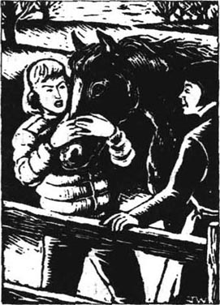
“对，但如果不得已，我也许会的。”
“你想让我跟他谈谈吗？也许他会听我的。这对他来讲很困难——你是他唯一的女儿，他也许对此非常焦虑。”
“哦，你肯帮我吗，玛丽？求你了。我想让爸爸喜欢西蒙，真的，但他总是对他发火。”
“亲爱的，我一定尽力，但我不知道是否有效。”
玛丽在去苏格兰就任新工作之前确实努力试过。她给约翰打电话，有时他们在镇上一起喝咖啡。她惊奇地发现约翰非常细心地听她讲，并且好像十分感激她的帮助。她想他的确是一个非常孤独的人，带着两个孩子，没有妻子，生活对他来说一定很艰难。他曾经经常跟他的孩子们交谈，但是现在不是这样了。
最后约翰同意了婚事。由于这个好消息，玛丽被邀请参加了一个特殊的晚餐。克里斯汀非常高兴。当玛丽到达时，她亲吻了玛丽，并给了她一件小巧秘密的礼物以表示感谢。那是一对漂亮的耳环。用餐时，约翰有点儿不自然，但也很高兴。他努力使自己笑出来，并感谢玛丽，虽然他没想到送她一件礼物。整个晚餐他都在观察克里斯汀。他好像害怕他再也见不到她了，当她冲他笑时，他感到很幸福。
然后西蒙站起来讲话。
“邓肯先生，”他说，“我将永远记住这个夜晚。我知道你是多么爱你女儿，请相信我，先生，我也爱她。你一直担心我，是因为你想让她尽可能嫁一个最好的丈夫，而我——当然我无法许诺什么，但我将努力去成为那样一个人。你是一个富有的人，邓肯先生。当然克里斯汀和我一开始不会有很多钱，但我希望我们能应付。”他对克里斯汀笑了笑，“邓肯先生，昨天，我跟我的老板谈了，他将付给我比以前多一点儿的工资！”
约翰看上去很惊讶，“噢，真的吗？为什么？”
“因为他给了我一项新任务。他让我替我们的报纸写关于环境的文章。每周我得写一整版关于环境的文章。这是第一篇，请看！”
他从口袋里抽出一页报纸，举在他们面前，上面有江河、沙滩和一些海豹的图片，标题是：
河口的海豹
已染上怪病
发现4只幼豹死亡
8．The wedding day
8
The wedding day
The disease among the seals got worse. Three more baby seals died, and one was born without a tail. Scientists came from London to look at them, and there were long articles in the newspapers, but no one was sure what the reasons were. Some people said that it was a disease that was always in the water; some people said the seals were eating diseased fish; and some people said that it was the paint factory near the river.
There was a sewage works near the river too. The sewage from another small town came to it. One day, in the factory, John Duncan found two young chemists testing samples of water from the river. The water came from two kilometres upstream, near the sewage works.
'Why are you doing that?' he asked, surprised.
'It's a special experiment,' one of them answered. 'David Wilson asked us to do it himself. Didn't he tell you, sir?'
John didn't answer. He watched them quietly for several minutes. 'What are the results?' he asked.
'They're bad, sir,' said the young man. But he didn't look worried; he looked pleased, proud of himself. 'That sewage works is putting a lot of nasty things into the river, you know. I think the newspapers will be very interested.'
'The newspapers?' John asked. The young man smiled.
'Yes, Mr Duncan, of course. Our company cares about the environment, doesn't it? That's why we're doing this. We want to help those poor seals, if we can.'
As John walked away, he listened for the sound of quiet laughter behind him. But he heard nothing. Perhaps the young man really believed what he said.
Christine and Simon were married on a fine day in June. When they came back from the church, they had a party in the garden at John's house. Everyone seemed very happy. John liked Simon's parents, and talked to them a lot.
'You're very lucky, Mr Duncan,' Simon's father said. 'You have a beautiful house with a lovely river at the end of the garden.'
'I haven't always been lucky,' John answered. 'People used to say I was a very unlucky man.' He stood still, thinking. He remembered how unhappy he had been in the little flat in the middle of the town. He had been unemployed then, with no money to buy good things for his children. But he had always been able to talk to them. Now he was a rich man, a success, and his children didn't want to talk to him.
He smiled at Mr and Mrs MacDonald. 'Yes,' he said. 'I'm a very lucky man. I have Simon for my son-in-law. I'm very pleased for my daughter.'
Mrs MacDonald was pleased. 'We're very pleased to have Christine for our daughter-in-law, too,' she said. 'And I'm sure Simon will help you with this river, Mr Duncan. I understand there's a disease in it, which is making the seals ill. Simon told me he's going to work very hard to find the reason for that, and clean up the river. I'm sure you're pleased about that, Mr Duncan.'
'Yes, of course.' John had seen Simon's article in the newspaper last night, about the diseases that came from the sewage works. David Wilson had shown it to him. John didn't want to talk about it.
He saw his daughter laughing with Simon, Andrew and some friends. He had never seen her look so happy. He remembered his own wedding, and the hopes he and Rachel had had.
'Let me get you another drink, Mrs MacDonald,' he said. 'We must drink to our children's future, and wish them luck.'
At the bar in the house he met Mary. She came back to the town sometimes, and twice he had visited her in Scotland.
'This day's been a great success, John,' she said. 'You must be a happy man.'
He touched her arm thoughtfully. 'I'd like to be, Mary,' he said. 'I've tried, you know. I've done my best. But it's their world now. They must do what they can with it.'
sewage works n. a place where sewage (human waste) is cleaned before it goes into the sea or a river. 污水处理厂。
sample n. a small piece of something, which is an example of the test. 样品。
care about 关心，担心。
son-in-law n. the husband of one's daughter. 女婿。
clean up （把）……打扫干净。
future n. time ahead. 未来，前途。
婚礼
8 婚礼
海豹的疾病日趋严重。又有3只幼豹死亡，有一只生出来就没有尾巴。从伦敦来的科学家们察看了它们，报纸上也登载了长篇文章，但是没有人能确定是什么原因。有些人说水中本来就有这种疾病；有些人说海豹是吃了有病的鱼；还有些人说是河附近的油漆厂。
河附近还有一个污水处理厂。污水来自另一个小镇。一天，在工厂里，约翰·邓肯发现两名年轻的化学师在测试从河里提取的水样。水来自两公里以外的上游，靠近污水处理厂。
“你们为什么这么做？”他惊奇地问。
“这是一项特殊实验。”其中一个人答道，“是大卫·威尔逊亲自让我们做的。他没告诉你吗，先生？”
约翰没有回答。他静静地望着他们有几分钟。“结果怎样？”他问。
“非常糟糕，先生。”年青人说，但他看上去并不担忧，他显得很高兴，很自豪。
“那个污水处理厂正在往河里排放一些脏东西，你知道。我想报纸对此会非常感兴趣的。”
“报纸？”约翰问。年轻人笑了。
“是的，邓肯先生，当然。我们公司关心环境，是吧？这就是我们为什么要做实验。如果能够的话，我们想帮助那些可怜的海豹。”
当约翰走开时，他等着听背后轻轻的笑声。但是他什么也没听到，也许年轻人真的相信他所说的。
克里斯汀和西蒙在6月一个明媚的日子里结了婚。当他们从教堂回来后，在约翰家的花园里举行了宴会。每个人好像都很快乐。约翰喜欢西蒙的父母，跟他们聊了很多。
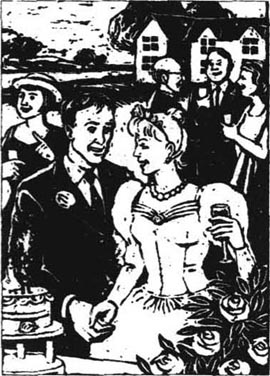
“你很幸运，邓肯先生，”西蒙的父亲说，“你有一座漂亮的房子，花园尽头是可爱的河。”
“我不总是幸运，”约翰回答道，“人们曾经说我是一个很不幸的人。”他站在那儿不动，思忖着。他记得他曾多么不幸福，住在小镇中部的一所小公寓里。然后他失业了，没钱给他的孩子们买好东西。但是他总能够跟他们交谈。现在他是一个富人、一个成功者，可他的孩子不愿跟他交谈。
他冲着麦克唐纳夫妇笑着说：“是的，我是一个非常幸运的人，我有西蒙做我的女婿。我为我女儿感到非常高兴。”
麦克唐纳太太很满意。“能有克里斯汀做我们的儿媳，我们也非常高兴，”她说，“我相信西蒙会帮助你解决这条河的问题，邓肯先生。我知道河里有病菌使海豹得病。西蒙告诉我他将努力去查找原因，清理河流。我相信你会对此满意的，邓肯先生。”
“这当然。”约翰昨晚已经看到报纸上西蒙写的关于疾病来自污水处理厂的文章，是大卫·威尔逊拿给他看的。约翰不想说什么。
他看到他女儿与西蒙、安德鲁和一些朋友在一起欢笑。他从没看到过她有这么高兴。他想起了自己的婚礼，以及他和雷切尔曾有过的愿望。
“我再给你斟一杯，麦克唐纳太太，”他说，“我们要为我们孩子的将来干杯，祝他们好运。”
在屋中的酒吧前他遇见了玛丽。她有时回到镇上，他也曾两次去苏格兰拜访她。
“这一天很成功，约翰，”她说，“你一定是个幸福的人。”
他若有所思地摸着她的胳臂。“我很想成为一个幸福的人，玛丽，”他说，“我努力过，你知道，我尽力了。但现在是他们的世界，他们应该为之努力。”
9．I don't believe you
9
I don't believe you
'It's not true, Christine. Simon's information is wrong.'
'I don't believe you, Father.'
John and Christine stared at each other angrily. It was a miserable, frightening moment for them both. It was a night three months after the wedding, and Christine had come with some happy news. She had come to tell her father that she was going to have a baby — his first grandchild! For a while they had talked about that, but then Christine had begun to talk about Simon's new job. Simon had found some information about the waste products from the paint factory. His information was dangerous for the company. Simon had written an article in the newspaper, saying that waste products from the paint factory could be killing the baby seals. David Wilson had written to the newspaper immediately, saying that Simon's article was completely untrue.
And so instead of talking happily about the baby, Christine and her father had argued all evening. John had known for a long time that they would have this argument. And next week in the town there would be a Public Enquiry, when government officials would try to discover the truth. Scientists and lawyers would speak on both sides of the argument. Everyone in the town was talking about the Enquiry — and about Simon's newspaper article.
'Why did David Wilson write to the paper, Father?' Christine asked. 'He's not a scientist, he's just a businessman. Why didn't you write to the paper?'
'I have written to the paper,' said John, sadly. 'You'll probably read my letter tomorrow.'
'Oh. What did you say?' Christine asked.
John felt sad. He hadn't wanted to write the letter. He and David Wilson had had a big argument about it. But in the end he had agreed. He had agreed to hide many bad things before, so one more didn't make any difference.
'I said that our waste products don't make the river water dangerous. We've tested them very carefully for many years, and if they are diluted in water, they are not dangerous at all. There are usually only one and a half parts per million in the river water, that's all. And the seals aren't in the river. They're out at sea. I wrote that in my letter, and I'll say the same thing at the Enquiry next week.'
Christine was watching him carefully as he spoke. She saw how tired and sad his face was. He was looking at his hands most of the time, not at her.
'Father, I want to believe you. But I can't,' she said softly.
He looked up. 'Don't then!' he said angrily. 'You believe Simon, if you want to! He's a journalist, after all — I'm only a biologist, and your father. Why should you believe me?' He stood up angrily, walked to the door, and opened it. 'I'm sorry, Christine. I've had a hard day, I'm tired, and I don't want to sit here listening to my daughter telling me I'm a liar. Go home to Simon. I'm going to bed!'
She got up slowly. 'It's important, Father,' she said slowly. 'It's important for everyone.'
'I know it is, Christine. But the paint factory's important too. It's given a lot to you, and me, and to the people of this town. Try to remember that, and forget about the seals for a while, can't you?'
'There are more important things than money, Father.'
'Are there? You tell that to all the people who work in the company, and live in this town. What are they going to live on, when the factory's closed because of Simon's stupid articles? Can they give their children photographs of baby seals to eat?'
Christine looked at him for a long moment before she went out of the door. 'And what about children who play by the river, Father? What if they drink the river water? What then?'
'Nobody drinks water from that part of the river,' he said. 'And I've told you — it isn't dangerous to children.'
Christine closed the door quietly behind her.
grandchild n. the child of one's child. 孙子，孙女。
argument n. disagreement. 争论。
Public Enquiry a special meeting when people can ask questions or argue about the plans or actions of a company, the government, etc. 公众听证会。
dilute v. to make a liquid thinner or not so strong by adding water.（用水）冲淡，稀释。
live on 靠……生活。
我不相信你
9 我不相信你
“这不是真的，克里斯汀，西蒙的消息是错误的。”
“我不相信你，爸爸。”
约翰和克里斯汀互相怒视着。这对他们俩来说是一个痛苦恐怖的时刻。这事发生在婚礼3个月后的一个夜晚，克里斯汀带回一些令人高兴的消息，她回来告诉她父亲她将要有小宝宝——他的第一个外孙或外孙女！他们就此谈论了一会儿，但是过后克里斯汀开始谈论西蒙的新工作。西蒙发现一些有关油漆厂废料的消息。他的消息对公司有威胁。西蒙在报纸上写了一篇文章，说来自油漆厂的废料可能正在杀死幼豹。大卫·威尔逊马上写信给报纸，说西蒙的文章完全是不真实的。
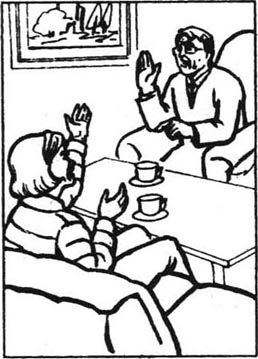
所以，克里斯汀和父亲并没有高兴地谈论孩子，而是争论了整个晚上。约翰早就知道他们会有这场争论。下星期镇上将举行一个公众听证会，那时政府官员将努力发现事实真相。科学家和律师们将为双方的争议辩护。镇上所有的人都在谈论这次听证会——也谈论西蒙的报刊文章。
“为什么大卫·威尔逊给报纸写信，爸爸？”克里斯汀问道，“他不是一个科学家，他只是一个商人。为什么你不给报纸写信？”
“我已经给报纸写过了，”约翰痛心地说，“你明天也许会读到我的信。”
“哦。你是怎么说的？”克里斯汀问。
约翰感到痛苦。他原不想写这封信。他和大卫·威尔逊为此大吵了一场。但最后他还是同意了。他以前曾同意隐瞒许多坏事，所以再多一次也无妨。
“我说我们的废料没有对河水造成危害。我们已经谨慎地测试了许多年。如果它们被水稀释，它们根本没有危险。在河水中废料通常仅占一百万分之一点五，仅此而已。而海豹不在河里，他们远在海里。我在信中写了这些，在下周的听证会上我会说同样的话。”
在他讲话时克里斯汀认真地望着他。她看到他的脸是那样疲倦和悲伤。他大部分时间一直看着自己的手，而没有看着她。
“爸爸，我想相信你，但我不能。”她轻声地说。
他抬起头。“那就别相信，”他气愤地说，“如果你愿意，你就相信西蒙好了！他毕竟是一个记者——我只是一个生物学家和你的父亲。你为什么要相信我呢？”他气愤地站起来，朝房门走去，打开门说：“对不起，克里斯汀，我这一天太艰难了，我累了。我不想坐在这儿听我女儿说我撒谎。回家找西蒙去吧，我要睡了。”
她慢慢站起来。“这很重要，爸爸，”她缓慢地说，“这对每个人都重要。”
“我知道它重要，克里斯汀。但是油漆厂也重要。它给了你很多，也给了我和这个城镇的居民很多。难道你就不能试着记住这点，而暂时忘却海豹吗？”
“有比钱更重要的东西，爸爸。”
“有吗？你把这话告诉所有在公司工作、住在镇上的人。当工厂由于西蒙那些愚蠢的文章而关闭时，他们将靠什么生存？他们能给孩子们幼豹的照片充饥吗？”
克里斯汀望着他许久以后才走出门，“那么在河边玩儿的孩子们怎么办，爸爸？他们如果喝了河水怎么办？那时该怎么办？”
“没人会喝那个地方的河水，”他说，“并且我已经告诉过你，那对孩子们没有危险。”
克里斯汀轻轻地将门在身后关上。
10．Greenworld
10
Greenworld
Two days later Christine and Simon arrived at John's house. It was very early — five o'clock in the morning — and they didn't knock at the door, or try to wake anyone up. In fact John wasn't there; Christine knew he had gone to Scotland to see Mary. He was coming back on the morning of the Enquiry.
Christine and Simon walked quietly down to the boathouse by the river. Without talking, they put the boat in the water, and sailed away across the river.
On the other side of the river they met two friends, Peter and Susan. Their friends were wearing white clothes, with Greenworld written on them. Simon and Christine also put on white clothes. Then they all got into the boat and sailed upstream, towards the paint factory.
It was a windy morning, and the waves on the river were quite big. But Christine was a good sailor, and in about half an hour, they reached the factory. Two photographers stood by the river, taking photos of them.
'OK, Simon, where is it?' shouted Christine.
'Over there, look — in front of that post!' he said. Christine sailed the boat towards the post. When they were near it, they could see under the water. It was the pipe that took the waste products out of the factory.
'OK, here!' shouted Simon. Christine turned the boat towards the wind, and Susan caught hold of the post. Then Simon and Peter climbed out of the boat into the water.
The water was moving fast here, and they had to hold onto the pipe and the boat. Peter then took several strong paper bags out of the boat. The bags were small but very heavy, because they were filled with building cement. Peter passed the bags one at a time to Simon, and Simon went down under the water and pushed each bag into the pipe. A few minutes later the mouth of the pipe was full of bags of cement.
Simon came up out of the water for the last time. 'It's OK!' he shouted. 'We've done it! The cement is wet already, and in a few hours it'll be as hard as a rock. Nothing can come out of that pipe now!' The two men climbed back into the boat and smiled at the photographers. Then Simon stood up in the boat with Christine, and held up a long white sheet. On the sheet was written:
GREENWORLD
This pipe kills seals!
At that moment two things happened. A man ran out of the factory, shouting angrily. And the wind suddenly became stronger. It caught the sail and sent it quickly from one side of the boat to the other. The back of the sail hit Christine hard on the back of the head. She fell into the water, like a bag of potatoes. Then the wind caught the sail again and threw it back across the boat. This time the boat fell over on its side and lay with its sail under the water.
Simon was under the sail. The sail and the sheet were all around him, and for several seconds he could see nothing. Then he came up, into the air. He saw a foot kicking hard in the water beside him. Someone was moving under the sail. Quickly, he went down under the water again, and tried to help Peter. But Peter caught hold of Simon, and pulled him under water too. There was a quick, frightening fight, and then Simon managed to pull them both up, into the air again. They held onto the side of the boat together, breathing deeply.
Simon saw Susan holding onto the back of the boat. Then he heard someone shouting. He looked behind him and saw the man from the factory. He was shouting and pointing downstream. But Simon had water in his ears, and at first he couldn't hear the words very well. Then he understood.
'Look!' the man said. 'The girl! She's drowning!'
Simon looked downstream, where the man was pointing. He saw something white, floating, far away. It was not doing anything, just floating round and round, like a bag of old clothes on the water. Christine! The river was taking her quickly downstream, towards the sea.
Hurriedly, Simon began to swim after her. He was a good swimmer, but the white clothes slowed him down. He swam as fast as he could, but he seemed to go slowly, so slowly. The water seemed heavy, and held him back. For the rest of his life he would dream about that long, slow swim, towards a white body that floated quickly away in front of him.
At last he reached Christine. She was floating with her face down, unconscious. He tried to turn her over, but it was so difficult. She was heavy, and her arms fell back in the water when he dropped them. He got her face out of the water but her head fell backwards, lifeless, and she was not breathing. He caught hold of her face then, put his mouth over hers, and blew into it. He rested, and then blew into her mouth again, and again. Nothing happened.
He looked around him. They were in the middle of the river, moving quickly downstream. Here, it was about twenty-five metres to the bank, but about two hundred metres downstream a second river came in from the left. The bank was further away there, and the water moved faster. Simon was tired, and afraid. It had rained last night, and there was a lot of water moving downstream to the sea. The strong wind blew little waves into his face.
He began to swim on his back, pulling Christine towards the trees on the bank. He swam for half a minute, then stopped, and blew four times into her mouth. Once, he thought he saw her breathe, but he couldn't be sure. Her face was very white, and he had no idea if her heart was beating. The river was taking them quickly to the sea.
He swam harder, kicking strongly with his legs. Nearer — only five metres to go now. But the bank was moving past very quickly. There was a tree near the bank. Its branches were low over the water. Simon kicked hard, caught the branch, and held onto it. The water tried to pull him away. He took a deep breath, and blew strongly into Christine's mouth again. And this time, he was sure, she took a breath by herself, afterwards.
It took him nearly five minutes to pull her on to the bank. When they got there, he put her on the ground, breathed into her mouth again, and then felt for her heart. At first he couldn't find it — his hands were too cold. Then — yes! — it was beating.
For another five minutes he helped her breathe, until he was sure she could do it by herself. Then he began to shiver. The wind made his wet clothes cold on his body. He wondered what to do. Then he looked down, and saw that Christine's eyes were open.
'Chris,' he said. 'Are you all right?'
She said something, but very quietly and he could not hear it. He lay down, and put his arms around her, to keep her warm. He could feel her heart beating, and her body breathing under him. Simon began to cry.
photographer n. a person who takes pictures of people or things as a profession. 摄影师
pipe n. tube. 管道，排水管。
cement n. grey powder that becomes hard like rock when mixed with water. 水泥。
drown v. to die in water because you cannot breathe. 淹没，溺水。
float v. to stay on the top of water. 漂浮。
unconscious adj. not able to see or hear, because the person is ill or hurt. 失去知觉的，昏迷的。
take a deep breath 深深地吸一口气。
绿色世界
10 绿色世界
两天过后，克里斯汀和西蒙到达约翰的家。时间很早——早晨5点——他们没有敲门，也不想吵醒任何人。事实上约翰不在。克里斯汀知道他去苏格兰看玛丽了。他将在听证会那天早晨回来。
克里斯汀和西蒙悄悄地走向河边的船屋。没有交谈，他们将船放入水中，向河对岸划去。
在河的另一边他们与两个朋友——彼得和苏珊——会面了。他们的朋友身穿白色衣服，上面写着绿色世界。西蒙和克里斯汀也穿上白衣服。然后他们全部上船，向上游油漆厂的方向驶去。
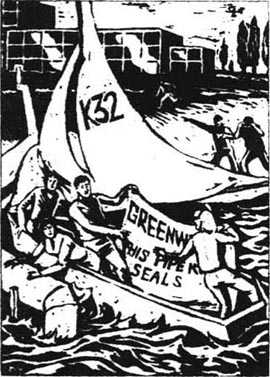
这天早晨风很大，河中波涛滚滚，但是克里斯汀是一个优秀的水手，大约半小时，他们就到达了工厂。两名摄影师站在河边拍下了他们。
“好啦，西蒙，它在哪？”克里斯汀喊道。
“在那儿，看啊——在柱子前面！”他说道。克里斯汀将船向柱子划去。当他们靠近时，他们可以看见水下，那是从工厂排放出废料的管子。
“好啦，在这里！”西蒙喊道。克里斯汀把船转向顺风，苏珊抓住柱子。然后西蒙和彼得爬出船跳入水中。
这里的水流很急，他们不得不抓住管子和船。彼得这时从船中拿出一些结实的纸袋。这些袋子很小但很沉，因为它们充满了建筑水泥。彼得把袋子一个个地递给西蒙，而西蒙钻到水下，把每个袋子推进管子。几分钟后，管子口已塞满了水泥袋。
西蒙最后一次从水中出来。“行啦，”他喊道，“我们干完啦！水泥已经浸透，过几个小时它将跟岩石一样硬。现在管子里再也排不出任何东西了。”两个人爬回到船上，对着摄影师笑了。然后，西蒙和克里斯汀在船上站起来，举起一长幅白纸，上面写着：
绿色世界
这条管道残杀海豹！
在那一时刻发生了两件事情：一个人跑出工厂愤怒地叫喊；风突然刮得更猛，扯倒了帆，并迅速把它从船的一边刮到另一边，帆的尾部沉重地打在克里斯汀头的后部，她像一袋土豆一样栽入水中，然后风又把帆掀起抛到船的另一边，这次船侧翻与帆一同沉入水底。
西蒙在帆下面。帆和纸缠住了他，有几秒钟他什么也看不见。然后他摆脱出来，浮到水面。他看见在他身旁有只脚用力在水中踢着。有人在帆下动。他迅速再次钻入水中，试图帮助彼得。但是彼得抓住西蒙，把他也拽入水中。经过一番迅速而可怕的拼搏，西蒙设法使两人都重新露出水面，他们一起抓住船帮，深深地吸气。
西蒙看到苏珊抓住船尾，然后听到有人呼喊。他往身后看，看见那个从工厂来的人。那人一边喊，一边指向下游。但是西蒙耳朵里有水，一开始他听不太清楚，随后他明白了。
“看啊！”那人说，“那女孩！她要淹死了！”
西蒙顺着那人所指的方向往下游望去。他看见远处有一个白色物体漂浮着。它一动不动，只是漂呀漂，像一袋旧衣服在水上漂。克里斯汀！河水正把她迅速地带向下游，通往大海。
西蒙马上跟着她游去。他是一个游泳健将，但是白衣服减慢了他的速度。他尽力游快，但他好像很慢，太慢了。河水好像很凶猛并且阻挡他前进。这辈子他都会常梦见这一漫长而缓慢的游泳，他紧随眼前迅速漂走的白色躯体。
终于，他追上了克里斯汀。她脸朝下漂浮着，已失去知觉。他设法把她翻过身来，但很困难。她很沉，而且当他一松手，她的两臂又落入水中。他把她的脸托出水面，但她的头向后垂，没有生命，没有呼吸。他托住她的脸，把他的嘴贴在她嘴上，往里吹气。他歇一下，又往她嘴里吹，一次又一次，没有变化。
他环视一下四围。他们在河中心，正迅速冲向下游。这里离岸边约25米，但大约两百米的下游从左边又有另一条河汇入。那儿的岸边更远，水流更急。西蒙又累又怕。昨夜下过雨，有大量雨水流向下游进入大海。强风在他脸上溅起小浪花。
他开始仰游，拖着克里斯汀向岸边的树游去。他游半分钟，停一下，向她嘴里吹4次气。有一次，他以为他看见她呼吸了，但他不敢肯定。她的脸色苍白，他不知道她的心脏是否还跳动，河水带着他们迅速流向大海。
他奋力地游，双腿用力蹬水。近了——现在只有5米远了。但是河岸飞快地移动。靠近岸边有一棵树，它的枝头低低地伸向水面。西蒙使劲一蹬，抓住树枝，并握住它。河水要把他拖走。他深深地吸口气，再次用力吹进克里斯汀的嘴里。这一次，他确定，她自己紧接着吸了一口气。
他大约花了5分钟把她拖上岸。当他们上岸后，他把她放在地上，再次往她嘴里吹气，然后摸她的心口。一开始他感觉不到，因为他的手太凉了。然后，他感觉到了，她的心在跳动。
随后的5分钟他帮助她呼吸，直到他确信她能够自己呼吸。接着他开始发抖，风吹得他身上的湿衣服冰凉地贴在身上。他考虑该怎么办。这时他往下看，看到克里斯汀睁开了眼睛。
“克里斯汀，”他说，“你好吗？”
她说了些什么，但非常轻，他听不到。他躺下身子，双臂搂住她，温暖她。他可以感觉到她的心在跳，她的身体在他下面喘气，西蒙开始哭了。
11．The Public Enquiry
11
The Public Enquiry
Two days later, the Enquiry beagn. Scientists came from London to ask questions about the disease that was killing the seals. Before he had gone to Scotland, John had been to see David Wilson about the Enquiry. David Wilson had asked John to speak for the company.
'You're our chief biologist, John,' he said. 'You're an important man. They'll believe you.'
John said nothing. He didn't want to speak at the Enquiry, but he knew he had to. David Wilson smiled. Or at least, his mouth smiled. But his eyes watched John carefully, all the time, like the cold eyes of a fish.
'Think carefully about what you say, John. If you say the wrong thing next week, hundreds of people will lose their jobs. And the first person to lose his job will be you, John. I promise you that.'
The Enquiry room was crowded. There were a lot of journalists and photographers there, and a lot of people from the town and the factory too. John's train was late, and he caught a taxi from the station. When he came into the room, he saw Simon, sitting with the journalists. Christine was near him, with Andrew and some young people from Greenworld. John smiled at her, but she didn't smile back. She looks very white and ill, he thought. It's probably the baby. He remembered how ill his wife Rachel had been in the mornings, before Christine was born, and he smiled sadly to himself.
'Mr John Duncan, please!'
He walked to the front of the room. As he sat down, he saw David Wilson's cold, grey eyes watching him from the other side of the room. That man should be up here instead, he thought. He should tell his own lies.
A lawyer began to ask him questions. At first it was easy. John explained how long he had worked for the company, and how much paint the factory produced. Then the lawyer asked about the waste products.
'These are very dangerous chemicals, aren't they?' the lawyer said.
'Well yes, of course,' John answered. 'Most chemicals are dangerous if people aren't careful with them. But we're very careful with them in our factory. Everyone wears special clothing. We haven't had a single serious accident in three years.'
'I'm pleased to hear it,' said the lawyer. 'But what happens outside the factory? Do you really put these very dangerous chemicals into the river?'
'Yes, we do,' said John. There was a noise in the room. Someone near Christine shouted something angrily, and a policewoman told him to be quiet. John went on. 'Of course we put these chemicals in the river, but we don't put a lot in. Only two or three hundred litres every day. That's not much. And we check the river all the time — three times every day. There are usually only two parts per million, or less, in the water near the factory, and there is much less downstream. That's not dangerous.'
'Not dangerous, Mr Duncan?' said the lawyer slowly. 'Are you sure?'
'Yes, I am,' John said. He looked up, at the hundreds of eyes watching him. David Wilson's eyes, Christine's eyes, Simon's.
'I understand,' the lawyer said slowly, 'that there has been an experiment with some rats. Some mother rats were given these chemicals in their drinking water, and some of their babies were born without legs. Is that right, Mr Duncan?'
John looked at the lawyer for the first time. He was a small, uninteresting-looking man in grey clothes, with grey hair and a thin face. He looks like a rat himself, John thought. The man's eyes were small and bright, and for some strange reason he had a newspaper in his hand. John began to feel afraid of him.
'Yes,' he said. 'That's right. But rats are much smaller than people, and they were given nearly five parts per million in their drinking water for ten days. That's very different. No one drinks the river water. It goes straight out to sea.'
He looked at the lawyer, and waited for the question about the seals. But it didn't come. Instead, the lawyer said: 'So you won't be worried, Mr Duncan, if someone falls into the river by accident, and drinks a lot of river water. Your own daughter, for example. There's no danger in an accident like that — is that right?'
John looked at Christine across the room. How big her eyes look in that white face, he thought. It must be because of the baby.
'No,' he said. 'There's no danger at all.'
There was the sound of voices in the room. The lawyer smiled a small, rat-like smile. He held his newspaper out towards John.
'You've been away in Scotland, Mr Duncan,' he said. 'Have you seen this?'
As John read the newspaper, his hands began to shake, and he had to hold the side of the table. There was a picture of Christine, standing up in a boat near the factory, and another picture of her lying in an ambulance, with Simon beside her. The headline said:
BIOLOGIST'S DAUGHTER NEARLY
DROWNS IN RIVER
There was a long silence. He tried to read the newspaper carefully, but there was something wrong with his eyes. And his head was full of pictures of Christine in the river, drowning. And his wife, Rachel, drowning in the storm, long ago.
He shook his head quickly from side to side, then took his glasses off and cleaned them.
'No,' he said in a quiet voice. 'I haven't read this before.'
'It's all right, Mr Duncan,' said the lawyer softly. 'Your daughter is safe. Her husband saved her, and she hasn't lost her baby. But she did drink a lot of river water. It was near the factory, too. You're not worried about that, are you?'
The lawyer's bright eyes were staring at him, like a rat that has just seen its food. Behind him, David Wilson suddenly stood up.
'That is a terrible question!' he shouted into the silence. 'You can't ask a man questions like that! Of course he's worried about his daughter! You must stop this Enquiry at once!'
'Just a minute, Mr Wilson,' said the lawyer. 'Mr Duncan can go in a minute. He just has to answer one question. Are you worried, because your daughter has drunk so much river water, Mr Duncan? Are you worried about her baby?'
John Duncan stared at the lawyer with fear in his eyes. Suddenly he hated him. He picked up the newspaper and threw it into the little man's rat-like face. 'Yes!' he shouted wildly. 'Yes! Yes! Yes! Of course I'm worried about the baby! Of course it's dangerous! Now let me go!'
He ran down the room, out of the door, into the street. A hundred staring eyes watched him go.
chief adj. highest in rank. 首席的，主任的。
special adj. not ordinary, regular, or usual. 特殊的，特别的。
for some strange reason 由于某些奇怪的原因。
by accident 偶然地，意外地。
ambulance n. vehicle for carrying sick people in emergency. 急救车。
be worried about 为……担忧。
公众听证会
11 公众听证会
两天后，听证会开始。来自伦敦的科学家就海豹死亡的病因提了问题。约翰在去苏格兰之前曾为听证会见了大卫·威尔逊。大卫·威尔逊要约翰为公司说话。
“你是我们的主管生物学家，约翰，”他说，“你是一个重要人物，他们会相信你。”
约翰什么也没说。他不想在听证会上讲话，但他知道他必须讲。大卫·威尔逊笑了，至少他的嘴是在笑，但他的眼睛像冰冷的鱼眼，自始至终小心地望着约翰。
“仔细想想你要说的，约翰。如果下周你说错了，几百人将失去工作，而第一个失业的将是你，约翰，我敢向你保证这一点。”
听证会大厅挤满了人，有很多记者和摄影师，还有许多从镇上和工厂来的人。约翰的火车误点了，他从车站搭了一辆出租车。当他进屋时，看见西蒙与记者们坐在一起。克里斯汀在他附近，还有安德鲁及绿色世界的一些年轻人。约翰冲她微笑，但她没有理他。她看上去非常苍白虚弱，他这样想。也许是因为孩子。他记得他的妻子雷切尔在生克里斯汀前的那些早晨也很虚弱，他自己苦笑着。
“约翰·邓肯先生，请！”
他走到大厅前面。当他要坐下时，他看到大卫·威尔逊那双冷酷、灰暗的眼睛正从屋子的另一边望着他。那个人本应在此，他想，他应该讲述他自己的谎言。
一个律师开始向他提问。一开始很容易，约翰解释了他在公司工作多久，工厂生产多少油漆。然后律师问到废料。
“这是非常危险的化学物质，是吗？”律师问道。
“是的，当然，”约翰答道，“如果人们不小心谨慎，大部分化学制品都有危险。但是在我们工厂，我们对它们非常谨慎。每个人都穿特制的服装，3年里我们没发生一件重大事故。”
“听你这么说我非常满意，”律师说，但是在工厂外发生了什么？你们真的往河里倒了这些非常危险的化学制品吗？”
“是的。”约翰说。屋里传出嘈杂声。克里斯汀的附近有人气愤地喊着什么，一个女警察让他安静。约翰继续说：“当然我们把它们倒入水中，但不多，每天仅仅两三百公升，那不算多。而且我们一日三次一直检测河水。工厂附近的水中通常只含有百万分之二或更少的成分，下游就更少了。那不危险。”
“不危险吗，邓肯先生？”律师慢慢地说，“你敢肯定吗？”
“是的，我敢肯定。”约翰说。他抬起头，望着几百双正在注视着他的眼睛。大卫·威尔逊的眼睛，克里斯汀的眼睛，西蒙的眼睛。
“我知道，”律师缓慢地说，“曾经有一个用老鼠做的实验。一些母鼠喝了带有这些化学物品的水，它们的一些幼崽儿生出来没有腿，这是真的吗，邓肯先生？”
约翰第一次看了一下律师。他个头矮小，貌不惊人，穿着灰色衣服，灰色头发，瘦长的脸。约翰觉得他看上去就像一只老鼠。那人的眼睛很小，但很亮，出于某种奇怪的原因，他手里拿着一份报纸。约翰开始对他产生畏惧。
“是的，”他说，“你说得对。但老鼠比人小得多，而且它们10天中一直喝含有将近百万分之五成分的水。这是绝对不同的。没人喝河水，河水直接流出去，进入大海。”
他望着律师，等着他问关于海豹的问题，但是律师没有问，而是说：“所以你就不担心，邓肯先生，假如有人意外地坠入河中并喝了许多河水，比如你自己的女儿。难道这样的意外没有危险吗？”
约翰望着屋子另一边的克里斯汀。他在想，她那苍白脸上的眼睛显得那么大，这一定是由于怀孕。
“没有，”他说，“根本就没有危险。”
屋里开始有说话的声音，律师露出细微的老鼠般的笑容。他向约翰举出他的报纸。
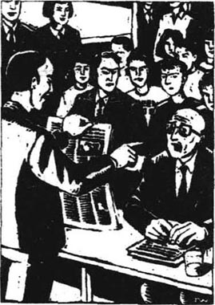
他说：“你去了苏格兰，邓肯先生，你看过这报道吗？”
当约翰读报纸时，他的手开始颤抖，他不得不抓住桌子的一边。上面有一张克里斯汀的照片，她站在工厂附近的一只船上，另一张照片是她躺在救护车里，西蒙在她身旁。标题是：
生物家的女儿险遭溺死
很长一段时间的寂静。他试图仔细地阅读报纸，但他的眼前一片模糊，他满脑子都是克里斯汀在河中被淹的情景以及很久以前他妻子雷切尔在暴风雨中被淹的情景。
他很快地摇动着脑袋，然后摘掉眼镜，擦拭起来。
“没有，”他轻声地回答，“我以前没有看过。”
“这没关系，邓肯先生，”律师温和地说，“你的女儿很安全。她丈夫救了她，她没有失去她的孩子。但是她确实喝了不少河水，而且是工厂附近的河水，你难道不担心吗？”
律师明亮的眼睛紧盯着他，像老鼠刚看见它的食物一样。在他的后面大卫·威尔逊突然站起来。
“那是一个糟糕的提问！”他的叫喊打破了沉默，“你不能对一个人这样提问！他当然担心他的女儿！你必须立即停止听证会！”
“等一等，威尔逊先生，”律师说，“邓肯先生一会儿就可以走，他只需回答一个问题。你为你女儿喝了那么多河水而担忧吗，邓肯先生？你为她的孩子担忧吗？”
约翰·邓肯盯着律师，眼里充满恐惧。突然间，他憎恨他。他拾起报纸朝着那个矮人的鼠脸上扔去。“是的！”他疯狂地叫喊，“是的！是的！是的！我当然担心孩子！那当然危险！现在让我走！”
他跑下会场，出了大门，来到街上。100双凝视着的眼睛望着他离去。
12．The future
12
The future
Six months later, John Duncan was living in a small flat near the sea. He had lost his job, and had had to sell his expensive house. He couldn't afford the payments on it.
From a window in his flat, he could look at the sea. He sat and looked at the cold, grey sea for hours, every day.
Christine would have her baby soon. He had bought lots of baby clothes to give her. His bedroom was full of baby clothes — little pink coats and trousers for a girl, blue ones for a boy. There were little soft toys too — teddy bears and small animals with blue, empty eyes.
But he hadn't given any of these things to her, because she wouldn't talk to him. When he went to see her, she closed the door in his face; when he rang, she put the phone down; when he wrote, she sent the letters back unopened.
There were a lot of books and magazines in his bedroom, too. But he kept them under his bed. He read them sometimes at night, but he didn't like to see them during the day. They were about babies, and the diseases that babies could get, before they were born. There were some terrible things in the books, terrible pictures. He didn't like to think about them, but he couldn't stop. He thought about them all day, all the time.
Today, as he sat staring out of the window at the sea, he could not stop his hands shaking. Every morning he rang the hospital, to ask if his daughter Christine MacDonald was there. He had rung this morning, and a nurse had said yes, Christine was there, and the baby was coming. That had been four hours ago. For two hours John had sat by the telephone, afraid to ring the hospital again. Three times he had picked it up, and three times he had put it down again.
He picked it up again, and rang the number. Seven... five... eight... three... it was no good. He put the phone down again. He could not hear the news from the cold voice of a nurse over the telephone. He had to see the baby for himself.
He got up, put on his coat, and went downstairs. There was a cold wind outside, blowing from the sea. The sea and the sky were grey and miserable. He went into a shop and bought some flowers. He chose them carefully — bright red and yellow colours — and the shopkeeper put paper around them to keep them safe. John took them and walked quickly, nervously, along the windy road by the sea, towards the hospital.
It was raining out at sea. Already the rain was falling on the sandbanks where the seals used to live. Soon it would be falling on the town. John Duncan shivered, and turned his coat collar up. Then, with his bright flowers in his hand, he walked on, into the winter wind.
teddy bear n. a soft toy bear. 玩具熊。
collar n. the piece of a shirt or coat that goes round the neck. 领子。
前途
12 前途
6个月以后，约翰住在一所靠海的小公寓里。他已经失去了工作，并且不得不卖掉昂贵的房子，他担负不起房费。
从他公寓的窗口可以望见大海。他每天坐在窗口几小时望着那冰冷阴沉的大海。
克里斯汀马上就要生小孩儿了。他买了好多婴儿的衣服想送给她。他的卧室里堆满了婴儿衣物——女孩穿的粉红色的小外衣、裤子，男孩穿的蓝色衣服。还有柔软的小玩具——玩具熊和嵌有蓝色毫无生气眼睛的小动物。
但是他没有把任何这些东西给她，因为她不理他。当他去看望她时，她当面把门关上；当他打电话时，她挂上电话；当他写信给她时，她原封退回。
他的卧室里还有很多书和杂志，但他把它们藏在床下。他有时晚上读它们，但是他不喜欢白天见到它们。它们是关于婴儿和婴儿在出生前可能得的疾病的书。书中有一些可怕的情景，可怕的图片。他不愿去想它们，但他止不住。他整天在想它们，无时无刻地在想。
今天，当他坐在窗口凝视着窗外的大海时，他的手禁不住地颤抖。每天早晨他都打电话到医院问她的女儿克里斯汀·麦克唐纳是否在那儿。今早他又打电话了，一个护士说是的，克里斯汀在那儿，婴儿就要降生了。那已是4小时以前的事了。他已经坐在电话机旁两小时，害怕再给医院打电话。他3次拿起电话，又3次放下电话。
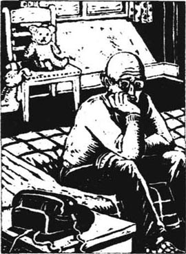
他再次拿起电话，拨了号码。7—5—8—3，没有用。他再次放下电话。他不能在电话里护士冷淡的声音中听到这个消息，他一定要亲自去看孩子。
他起身穿上外衣，走下楼梯。外面从海上刮来一阵冷风。海面和天空一片阴暗凄凉。他走进一家商店买了一些花。他细心地挑选——鲜红和黄色——店主把它们用纸包扎好以防损坏。约翰拿起它们在风中飞快地忐忑不安地走在海边通往医院的路上。
海上下起了雨。已经看到雨正落在海豹曾栖身过的沙滩上。很快小镇上也会下起雨。约翰·邓肯身上发抖，他把衣领竖起来，然后手里拿着他鲜艳的花，顶着冬天的寒风继续走去。
Exercises
Exercises
A Checking your understanding
Chapters 1-2 Are these sentences true (T) or false (F)?
1 John Duncan did not think he would get the job at the chemical company.
2 His wife Rachel had died in a car crash.
3 John had a fine house before his wife died.
4 It was easy for John to find jobs.
Chapters 3-4 Write answers to these questions.
1 What was special about the new paint?
2 Why did John go to see the doctor?
3 What did Christine and Andrew think of Mary on her first visit?
4 Why was Andrew excited when they went sailing down to the river mouth?
Chapters 5-6 How much can you remember? Check your answers.
1 How long had the rats had the waste products in their drinking water?
2 How many parts per million were there in their drinking water?
3 How much would the new cleaning machines cost?
4 How many more people had the paint factory employed?
5 How much did David Wilson promise to pay John next year?
Chapters 7-8 Find answers to these questions in the text.
1 Why did Mary leave the paint factory?
2 Why was Christine angry with her father?
3 What was Simon's new job?
4 What were the two young chemists in the factory doing?
Chapters 9-10 Who in the story...
1 ... wrote an article in the newspaper about the seals' deaths?
2 ... wrote letters to the newspaper, saying the article was untrue?
3 ... told John Duncan that he was a liar?
4 ... put the cement in the factory's pipe in the river?
Chapters 11-12 Write answers to these questions.
1 Why didn't John know about Christine's accident?
2 What did John do when the lawyer told him about the accident?
3 Why hadn't John given the toys and baby clothes to Christine?
4 Why was he afraid to phone the hospital?
B Working with language
1 Put these sentences in the right order. Check the order with chapter 10.
1 After a while Christine started breathing again.
2 He quickly swam after her and pulled her head out of the water.
3 They filled the factory pipe with bags of cement.
4 At last Simon managed to reach the bank and pull Christine out of the water.
5 Simon blew air into her mouth and began to swim towards the bank.
6 The four friends sailed down the river to the factory.
7 When he came up, he saw Christine floating away downstream, unconscious.
8 Then the wind blew the boat over on its side.
9 Her face was very white and she was not breathing.
10 For a few seconds Simon was under the water.
2 Complete these sentences with information from chapter 11.
1 Although John didn't want to speak at the Public Enquiry, he...
2 'Most chemicals are dangerous if...'
3 'We put these waste products in the river, but...'
4 John's hands began to shake when...
5 The lawyer asked: 'Are you worried, because...'
C Activities
1 Write a newspaper report about one of these stories:
a) Simon's story about the dead seals
b) the story about Christine nearly drowning
c) what happened at the Public Enquiry.
2 What do you think happened when John Duncan got to the hospital? Write the next chapter of the story. lf you like, write it as a play and act it out.
3 Write a short description of one person from the story that you like, or don't like, or feel sorry for.
4 'Jobs for people are more important than seals dying.' Do you agree? Write a paragraph to say why you agree or don't agree.
5 How clean is the water in your local river? Find out, and tell the class about it.
封底
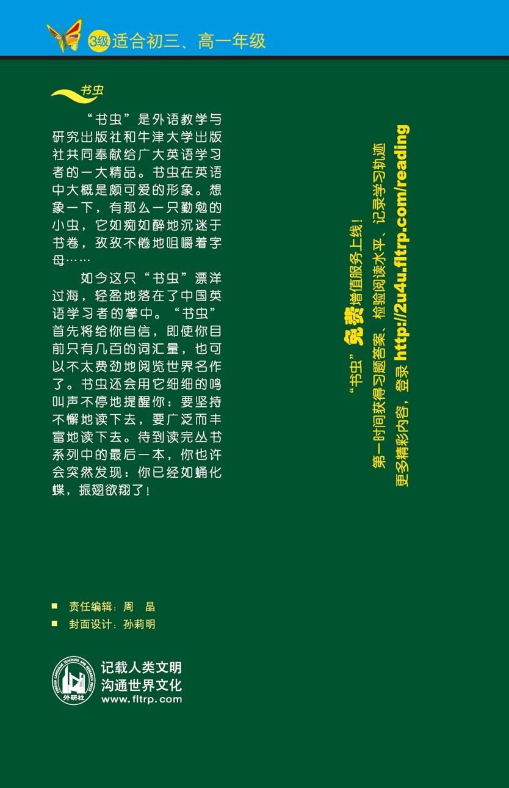